Inspire RH5DG2
다관절 손
안전 수칙과 사양, 손목 커넥터 핀 정의, RS485 · Modbus RTU · CAN FD · EtherCAT 프로토콜, 레지스터 전체와 촉각 센서 데이터, 내장 동작과 자주 쓰는 명령 예를 Inspire-Robots 공식 사용 설명서에서 옮겼습니다.
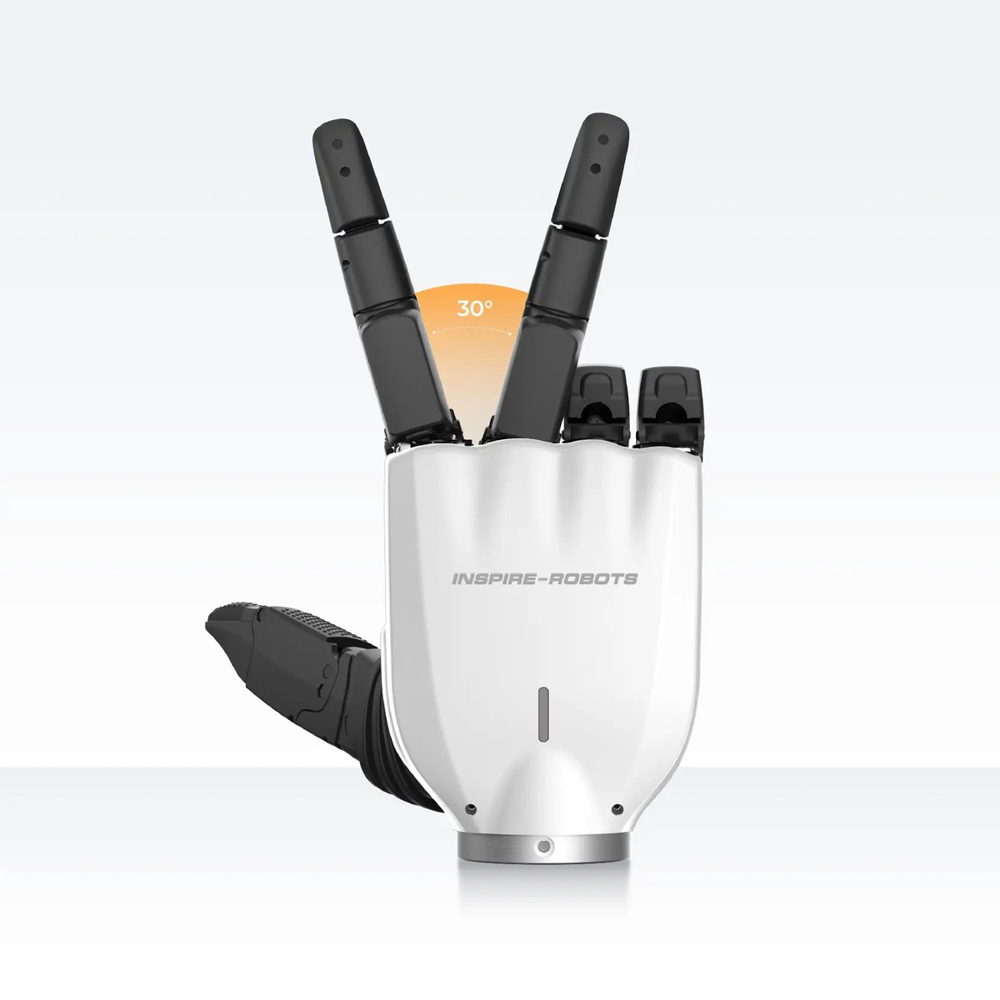
이 설명서에 대하여
| 로봇 | Inspire RH5DG2 다관절 손 (13자유도 · 관절 18개, 손가락 끝과 손바닥의 정전식 촉각 센서, RS485 + EtherCAT 또는 CAN FD + EtherCAT) |
| 근거 문서 | Inspire-Robots Dexterous Hands User Manual for RH5DG2 V1.4 (2026-07, PRJ-02-TS-U-020) · 대조: Inspire 중국어판 仿人五指灵巧手 RH5DG2 系列用户手册 V1.0 (2025-12) |
| 함께 보는 책 | Inspire RH56E2 · RH56DFTP 운용 설명서 (같은 8핀 항공 플러그와 케이블 색, 같은 RS485 프레임 형식) |
| 판 | 한국어판 · 2026.11.18 |
| 문의 | go.support@wego-robotics.com |
이 책은 Inspire 공식 사용 설명서(영문) V1.4 전체를 옮긴 것이며, 장 순서는 WeGo 설명서 형식에 맞췄습니다 (원문의 안전 수칙을 2장으로, 원문 2장 '통신 프로토콜'을 4 ~ 9장으로, 원문 3장 '자주 쓰는 명령 예'를 10장으로). 원문의 오류나 앞뒤가 맞지 않는 곳은 값을 고치지 않고 그 자리에 문서 오류 · 문서 차이 상자로 적었습니다. 영문판 V1.4와 중국어판 V1.0이 다를 때는 V1.4를 따르고, 눈여겨볼 차이만 상자에 적었습니다.
Inspire는 원문의 정확성에 최선을 다하지만 기술적 오류나 오탈자가 없음을 보증하지 않는다고 밝힙니다. 고친 내용은 다음 판에 반영하며, 사용자에게 미리 알리지 않고 고칠 수 있다고 덧붙입니다. ID와 보율은 원문에 적힌 공장 기본값입니다.
© WeGo Robotics (한국어 번역) · 원문 © Beijing Inspire-Robots Technology Co., Ltd. WeGo Robotics는 Inspire-Robots의 공식 파트너입니다. 표지의 RH5DG2 사진은 Inspire-Robots가 웹사이트(en.inspire-robots.com)에 올린 제품 사진을 그대로 실은 것입니다.
목차
- 01제품 개요
- 02중요 안전 수칙
- 03전기 연결과 통신 방식
- 04RS485 프로토콜
- 05Modbus RTU
- 06CAN FD 프로토콜
- 07레지스터
- 08촉각 센서와 내장 동작
- 09EtherCAT
- 10자주 쓰는 명령 예
제품 개요
RH5DG2는 작고 토크가 큰 마이크로 리니어 서보 액추에이터 13개로 움직이는 다섯 손가락 다관절 손입니다. RS485 · CAN FD · EtherCAT 포트로 손 내부 레지스터를 읽고 써서 제어합니다. 문서
주요 특징 문서
RH5DG2 시리즈 다관절 손(이하 '손')은 부피가 작고 토크가 큰 마이크로 리니어 서보 액추에이터를 통합해 설계한 기계식 다관절 손입니다. 민감한 힘 센서를 갖춘 마이크로 리니어 서보 액추에이터가 13개 들어 있고, 사용자 인터페이스로 RS485 · CAN FD · EtherCAT 통신을 지원합니다. 임계값을 다르게 정하면 단단함이 다른 물체를 쉽게 쥘 수 있습니다.
간결하고 효율적인 제어 명령으로 손을 빠르게 다룰 수 있으며, 성능이 뛰어나 서비스 로봇 · 교육 도구 · 의수 같은 분야에 알맞습니다.
원문 첫머리의 '기본 안내'(Basic Instructions)는 제품을 'RH56F1 시리즈'로, 1.1절 본문은 'RH56DG2 시리즈'로 적었습니다. RH56F1은 Inspire의 다른 모델이라 다른 설명서의 문장을 옮겨 온 것으로 보입니다. 표지 · 머리글과 중국어판 V1.0은 모두 RH5DG2이므로 이 책은 RH5DG2로 옮겼습니다.
구조와 치수 문서
손의 구조와 치수는 다음과 같습니다 (그림 1).
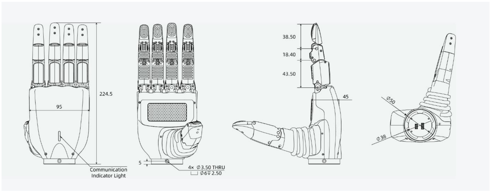
원문은 이 그림을 '아래 표 1'이라고 가리키지만, 표 1은 다음 절의 성능 사양 표입니다. 그림의 치수에는 단위가 적혀 있지 않습니다.
성능 사양 문서
| 항목 | 값 |
|---|---|
| 전체 관절 수 | 18 |
| 자유도 | 13 |
| 힘 센서 수 | 8 |
| 힘 센서 분해능 | 0.1 N |
| 손끝 반복 위치 정밀도 | ±0.4 mm |
| 네 손가락 쥐는 힘 | >10 N |
| 엄지 쥐는 힘 | >15 N |
| 동작 전압 | 24 ~ 48 V |
| 대기 전류 | 0.4 ± 0.015 A @ 24 V |
| 무부하 동작 평균 전류 | 1.2 A @ 24 V |
| 최대 쥐는 힘일 때 전류 | 6.0 A @ 24 V |
| 통신 인터페이스 | RS485 + EtherCAT 또는 CAN FD + EtherCAT |
- 중국어판 V1.0은 자유도를 '능동 13개 + 수동 5개'로 적습니다. 전체 관절 18개 가운데 13개를 액추에이터가 직접 움직입니다.
- 1.1절은 액추에이터 13개가 모두 힘 센서를 갖춘 것처럼 적지만, 사양 표의 힘 센서 수는 8입니다. 7장의 전원 투입 힘 제어 표는 7 ~ 10번 전동 실린더를 '힘 제어 없음'으로 적고, 중국어판 V1.0은 7 ~ 10번 전동 실린더에 힘 센서가 없다고 적습니다.
원문 설명서와 제조사 문서
원문 설명서는 RH5DG2 시리즈 다관절 손의 제품 정보를 다룹니다. 제품을 쓰기 전에 설명서를 끝까지 읽고, 내용을 충분히 이해한 뒤에 다루십시오. 인쇄본은 제품을 산 공급처나 사무소에 요청하고, 전자본은 Inspire-Robots 공식 웹사이트(https://www.inspire-robots.com)에서 받으십시오.
| 날짜 | 판 | 바뀐 내용 |
|---|---|---|
| 2025-6 | V1.0 | 첫 발행 |
| 2026-2 | V1.1 | 손가락 관절 각도 범위 수정, EtherCAT 데이터 정의 수정 |
| 2026-2 | V1.2 | 검지 · 중지의 큰 힘 편차 상태 주소 추가, 권장 최소 설정 속도 설명 추가 |
| 2026-4 | V1.3 | 손가락 각도 동작 범위 수정 |
| 2026-7 | V1.4 | EtherCAT 인터페이스의 데이터 주소 정의 수정 |
- V1.2에서 더했다는 '권장 최소 설정 속도' 설명은 V1.4 본문에 없습니다. 속도 설정값 절(7장)에는 속도 2000의 뜻만 있습니다.
- 이 책이 대조한 중국어판 V1.0은 2025년 12월에 나왔고 판 기록에 V1.0 하나만 있어, 영문판의 V1.0(2025-6)과 날짜가 다릅니다.
| 항목 | 내용 |
|---|---|
| 제조사 | Beijing Inspire-Robots Technology Co., Ltd. |
| 웹사이트 | https://www.inspire-robots.com |
| 영업 전화 | 400-666-5160 |
중요 안전 수칙
이 제품을 쓰기 전에 이 장을 꼭 읽고, 조작 · 안전 · 주의 사항을 충분히 이해한 뒤에 다루십시오. 제품은 바르게 설치하고, 안전에 최대한 주의하며 조작하십시오. 문서
제품 조작에 따르는 위험은 주로 이 장의 경고 · 주의 상자에 적혀 있습니다. 원문이 가장 높은 위험 등급으로 표시한 항목은 경고 상자 머리글에 '(위험 등급)'을 붙였습니다. 그 밖의 사항은 일반 전기 작업 수칙을 따르십시오.
안전 등급
| 표시 | 뜻 |
|---|---|
| 위험 | 정해진 절차를 지키지 않으면 사망하거나 크게 다칩니다. |
| 경고 | 정해진 절차를 지키지 않으면 사망하거나 크게 다칠 수 있습니다. |
| 주의 | 정해진 절차를 지키지 않으면 가볍게 다치거나 장치가 손상될 수 있습니다. |
- 설명을 알아보기 쉽게 하려고, 설명서의 일부 제품 그림은 덮개나 안전 가드를 뗀 모습일 수 있습니다. 제품을 조작할 때는 모든 덮개와 안전 가드를 제대로 달고, 설명서의 절차를 따르십시오.
- 설명서의 제품 그림은 설명을 위한 것이며 주문한 제품과 조금 다를 수 있습니다. 받은 실물을 기준으로 하십시오.
개봉과 인수
- 개봉했을 때 제품이나 부속품에 나사 풀림 · 손상 · 부식 같은 문제가 있으면 설치하지 마십시오.
- 개봉했을 때 제품 안에 습기가 있거나, 부품이 빠졌거나 손상되었으면 설치하지 마십시오.
- 포장 목록과 꼼꼼히 맞춰 보아 제품 이름이 다르면 설치하지 마십시오.
- 개봉하기 전에 운송 포장이 파손 · 침수 · 습기 · 변형되지 않았는지 살피십시오.
- 순서에 따라 한 겹씩 개봉하십시오. 세게 두드리지 마십시오.
- 개봉할 때 장치 외관과 모든 부속품에 물리적 손상 · 부식 · 충격 자국이 없는지 살피십시오.
- 개봉한 뒤 포장 목록과 맞춰 장치 · 부속품 · 문서가 모두 들어 있는지 확인하십시오.
위 항목에서 문제를 발견하면 곧바로 제품 공급처나 사무소에 연락하십시오.
보관과 운송
- 정해진 보관 · 운송 조건을 엄격히 지켜 제품이 손상되지 않게 하십시오.
- 물이 튀거나 비가 들이치는 곳, 직사광선, 강한 전기장 · 자기장, 심한 진동이 있는 곳에서 보관하거나 운송하지 마십시오.
- 보관 기간은 최대 3개월로 하십시오. 더 오래 보관해야 하면 보호 조치를 강화하고 필요한 점검을 하십시오.
- 차량으로 운송하기 전에 제품을 단단히 포장하십시오. 장거리 운송에는 반드시 밀폐 컨테이너를 쓰십시오.
- 제품에 영향을 주거나 제품을 손상시킬 수 있는 장치 · 물질과 함께 운송하는 것은 엄격히 금지합니다.
설치
- 설치하기 전에 제품 설명서와 안전 수칙을 끝까지 읽으십시오.
- 강한 전기장이나 전자기 간섭이 있는 곳에 설치하지 마십시오.
- 캐비닛이나 섀시 안처럼 밀폐된 곳에 설치할 때는 냉각 팬이나 에어컨 같은 냉각 장치로 충분히 식혀 환경 조건을 맞추십시오. 그러지 않으면 제품이 과열되거나 불이 날 수 있습니다.
- 제품을 개조하는 것은 엄격히 금지합니다.
- 제품의 구성품이나 부품을 고정하는 볼트를 푸는 것은 엄격히 금지합니다.
- 제품을 캐비닛이나 단말 장비에 넣을 때는 그 캐비닛이나 장비에 방화 외함 · 전기 보호 외함 · 기계 보호 외함 같은 보호 장치가 있어야 합니다. 보호 등급은 관련 IEC 표준과 현지 법규를 따라야 합니다.
- 변압기처럼 전자기 간섭이 강한 장비를 함께 설치할 때는 차폐 장치를 달아 이 제품의 오작동을 막으십시오.
- 제품은 금속처럼 불에 타지 않는 면에 설치하십시오. 가연물을 제품에서 멀리 두어 화재를 막으십시오.
설치하는 동안 제품 위를 천이나 종이로 덮어, 구멍을 뚫을 때 금속 부스러기 · 기름 · 물 같은 이물질이 제품 안에 들어가 고장 나지 않게 하십시오. 설치가 끝나면 덮개를 걷어 내십시오. 덮개가 통풍구를 막으면 열이 빠지지 않아 제품이 과열될 수 있습니다.
배선
- 제품의 설치 · 배선 · 정비 · 점검 · 부품 교체는 자격을 갖춘 사람만 하십시오.
- 배선하기 전에 관련된 모든 장치의 전원이 완전히 끊어졌는지 확인하십시오. 전원을 끊은 뒤에도 장비 안의 커패시터에는 전압이 남아 있습니다. 제품 경고 라벨에 적힌 시간 이상 기다린 뒤에 배선이나 다른 작업을 하고, 주회로의 직류 전압을 재서 안전한 전압인지 확인하십시오. 지키지 않으면 감전될 위험이 있습니다.
- 입력 전원을 장치나 제품의 신호 · 통신 단자나 출력 단자에 연결하는 것은 엄격히 금지합니다. 장치가 손상되거나 불이 날 수 있습니다.
- 제조사의 영업 · 기술 지원 담당자가 승인한 커넥터와 케이블을 쓰십시오. 규격에 맞지 않는 커넥터와 케이블은 고장을 일으킵니다.
- 배선에 쓰는 모든 케이블은 선 굵기와 차폐 요구를 지켜야 합니다. 차폐 케이블의 차폐층은 한쪽 끝을 확실히 접지하십시오.
- 장치와 제품은 제대로 접지해야 합니다. 그러지 않으면 정전기로 제품이 손상될 수 있습니다.
- 배선할 때 금속 심선이 드러나지 않게 해, 고온 산화나 단락을 막으십시오.
- 정전기 방전(ESD) 보호 절차를 지키십시오. 배선할 때는 정전기 방지 손목 밴드를 차서 장치와 제품 내부 회로가 손상되지 않게 하십시오.
- 전원 플러그와 모든 커넥터를 단단히 연결해, 접촉 불량으로 동작에 문제가 생기지 않게 하십시오.
- 제어 회로는 차폐 꼬임쌍선으로 배선하고, 차폐선을 제품의 접지 단자에 연결하십시오. 그러지 않으면 제품이 비정상적으로 동작할 수 있습니다.
전원 투입
- 전원을 넣기 전에 제품이 바르게 설치되었고 모든 배선이 단단히 연결되었는지 확인하십시오.
- 전원을 넣기 전에 전원 공급 장치가 제품 요구 사항에 맞는지 확인해, 제품 손상이나 화재를 막으십시오.
- 전원을 넣기 전에 전원 사양이 장치 정격에 맞는지 확인해, 과전압으로 손상되지 않게 하십시오.
- 배선과 파라미터 설정을 마친 뒤 시운전으로 기계가 안전하게 동작하는지 확인하십시오. 그러지 않으면 사람이 다치거나 장치가 손상될 수 있습니다.
- 전원을 넣기 전에 제품의 정격 전압이 전원 전압과 같은지 확인하십시오. 전원 전압이 틀리면 불이 날 위험이 있습니다.
이상이 생겼을 때
장치를 직접 분해하지 마십시오. 고장이 확인되거나 의심되면 구입처나 제조사의 영업 · 기술 지원 담당자에게 연락하십시오.
다음 중 하나라도 해당하면 즉시 전원을 끊고 구입처나 제조사에 연락하십시오.
- 장치 안에 물이 들어갔을 때
- 하우징이 깨졌거나 부품이 떨어져 나갔을 때
- 동작이 비정상이거나 성능이 기준에서 벗어났을 때
- 장치에서 이상한 냄새 · 연기 · 소음이 날 때
사용 종료와 폐기
- 장치와 제품은 관련 국가 규정과 표준에 따라 사용을 종료해, 재산 손실이나 인명 사고를 막으십시오.
- 사용을 끝낸 장치와 제품은 산업 폐기물 처리 기준에 따라 폐기 · 재활용해 환경 오염을 막으십시오.
전기 연결과 통신 방식
손목의 8핀 항공 플러그 하나로 전원과 통신(이더넷 + RS485 또는 CAN FD)을 연결합니다. 손 안의 전동 실린더 13개가 13자유도를 하나씩 맡습니다. 문서
손목 커넥터 핀 정의 문서
손목에는 1BZ1G08CLL00000 항공 플러그 인터페이스(Lemo FGG-1B-8P 항공 플러그와 호환)가 있습니다. 실물과 핀 기능은 다음과 같습니다 (그림 2 · 표 4).
| 핀 | 정의 |
|---|---|
| 1 | GND |
| 2 | VCC (24 ~ 48 V) |
| 3 | 485_A/CANFD_H |
| 4 | 485_B/CANFD_L |
| 5 | TX+ (데이터 송신 +) |
| 6 | TX- (데이터 송신 −) |
| 7 | RX+ (데이터 수신 +) |
| 8 | RX- (데이터 수신 −) |
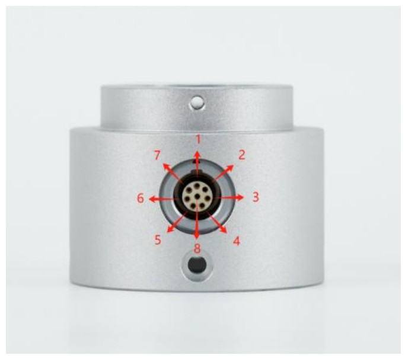
외부 케이블 문서
손의 외부 케이블과 선 색깔별 기능은 다음과 같습니다 (그림 3 · 표 5).
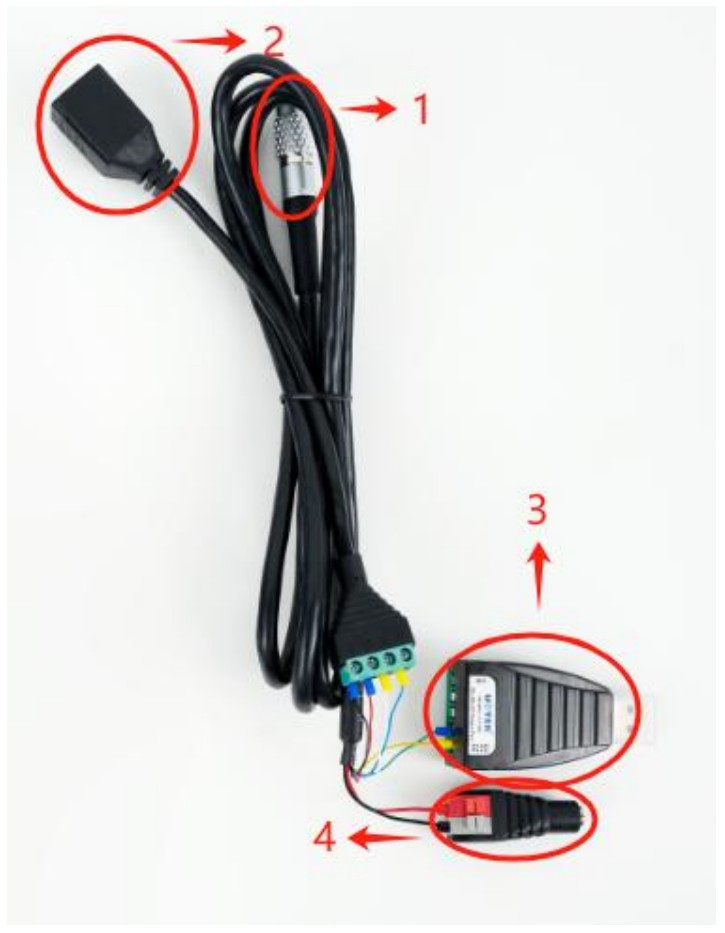
| 선 | 기능 |
|---|---|
| 흰색 | TX+ (데이터 송신 +) |
| 파란색 | TX- (데이터 송신 −) |
| 빨간색 (가는 선) | RX+ (데이터 수신 +) |
| 검은색 (가는 선) | RX- (데이터 수신 −) |
| 노란색 | 485_A/CANFD_H |
| 초록색 | 485_B/CANFD_L |
| 빨간색 (굵은 선) | VCC (24 ~ 48 V) |
| 검은색 (굵은 선) | GND |
그림의 번호: ① 항공 플러그 인터페이스 — 손 플랜지의 항공 플러그에 연결 · ② 네트워크 인터페이스 — 이더넷 케이블에 연결 · ③ CAN FD/RS485 인터페이스 · ④ 전원 인터페이스.
전동 실린더와 자유도 배치 문서
손 안의 전동 실린더 배치와 자유도 배치는 다음과 같습니다 (그림 4 · 그림 5). 7장의 레지스터 표는 각 값을 'N번 전동 실린더'로 가리킵니다.
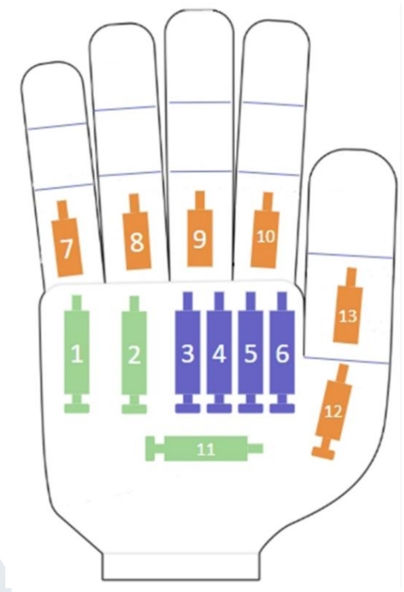
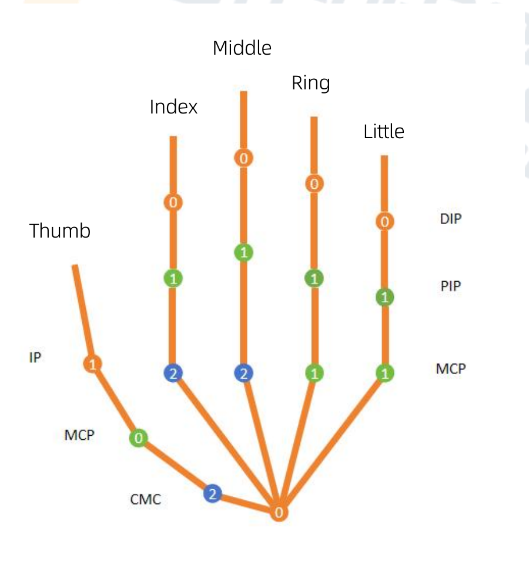
원문 V1.4는 전동 실린더 번호와 관절의 대응을 표로 적지 않습니다. 각도 레지스터(7장, 1080 ~ 1092)는 13개를 1 새끼손가락 뿌리 관절, 2 약지 뿌리 관절, 3 중지 뿌리 관절, 4 중지 옆 벌림, 5 검지 뿌리 관절, 6 검지 옆 벌림, 7 ~ 10 새끼손가락 · 약지 · 중지 · 검지 중간 관절, 11 엄지 옆 벌림, 12 엄지 첫째 관절 굽힘, 13 엄지 둘째 관절 굽힘 순서로 적습니다. 그림 4의 번호 배치도 이 순서와 맞습니다. 중국어판 V1.0도 4번 · 6번 전동 실린더가 중지 · 검지의 옆 벌림을 맡는다고 적습니다.
통신 방식 문서
- RS485 · CAN FD: 별도 변환 회로를 쓰면 손 254대를 한 버스에 병렬로 연결할 수 있습니다.
- EtherCAT: EtherCAT 통신 방식으로 손 여러 대를 한 버스에서 제어할 수 있습니다.
손의 통신 명령과 레지스터는 제품 사용자에게 공개되어 있습니다. 사용자는 위 인터페이스로 손을 상위 시스템(컨트롤러나 일반 컴퓨터)에 연결하고, PC나 임베디드 컨트롤러로 손의 파라미터를 설정하고 동작을 제어할 수 있습니다. 같은 버스에 연결한 손은 ID(7장)를 서로 다르게 정하십시오.
RS485 프로토콜
상위 시스템은 손 내부 레지스터를 읽고 써서 손의 상태를 얻고 손을 제어합니다. RS485에서는 패킷 헤더 · 손 ID · 명령 · 주소 · 데이터 · 체크섬으로 이루어진 전용 프레임을 씁니다. 문서
통신 프로토콜 개요 문서
주 제어 장치(MCU)는 손 내부 레지스터를 읽고 써서 손의 상태를 얻고 손을 제어합니다. 4 ~ 6장의 세 프로토콜이 모두 이 방식을 씁니다.
- 레지스터 읽기: 상위 시스템이 손 내부 레지스터 값을 읽습니다. 그룹 단위로 읽을 수 있으며, 그룹은 주소가 이어진 여러 레지스터를 말합니다. 상위 시스템이 읽기 명령(레지스터 그룹의 시작 주소 · 길이 등)을 보내면, 손은 데이터를 받아 검사에 이상이 없을 때 그 레지스터의 데이터를 상위 시스템에 돌려줍니다.
- 레지스터 쓰기: 상위 시스템이 손 내부 레지스터에 데이터를 씁니다 (그룹 단위로 쓸 수 있음). 상위 시스템이 쓰기 명령(레지스터 그룹의 시작 주소와 쓸 데이터)을 보내면, 손은 데이터를 받아 검사에 이상이 없을 때 확인 신호를 상위 시스템에 돌려주고 그 동작을 실행합니다.
RS485 개요 문서
RS485는 TIA/EIA-485 표준이 정한 직렬 데이터 통신 규격으로, 산업 · 통신 분야에서 널리 쓰입니다. 두 선 A · B의 전압 차로 데이터를 나타내는 차동 신호 전송을 써서 잡음에 강하므로, 먼 거리와 잡음이 많은 환경에서도 안정적으로 통신할 수 있습니다.
RS485 통신 파라미터는 데이터 비트 8, 정지 비트 1, 패리티 없음이고, 기본 보율은 115200 bps입니다. 보율은 레지스터 1001(7장)로 바꿉니다.
레지스터 읽기 문서
읽기 명령 프레임 형식은 아래와 같습니다. Address는 읽을 레지스터의 시작 주소, Hands_ID는 손 ID, Address_L은 Address의 하위 8비트, Address_H는 상위 8비트입니다.
Register_Length는 읽을 데이터의 바이트 길이(단위: 바이트, 레지스터 하나는 2바이트)입니다. Checksum은 프레임 헤더를 뺀, 체크섬 앞의 모든 데이터를 더한 값의 하위 바이트입니다.
| 바이트 | 값 | 설명 |
|---|---|---|
| byte[0] | 0xEB | 패킷 헤더 |
| byte[1] | 0x90 | 패킷 헤더 |
| byte[2] | Hands_ID | 손 ID |
| byte[3] | 0x04 | 프레임 데이터 길이 |
| byte[4] | 0x11 | 레지스터 읽기 |
| byte[5] | Address_L | 레지스터 시작 주소의 하위 8비트 |
| byte[6] | Address_H | 레지스터 시작 주소의 상위 8비트 |
| byte[7] | Register_Length | 읽을 데이터의 바이트 길이 |
| byte[8] | Checksum | 체크섬 |
손은 읽기 명령에 다음 응답 프레임을 돌려줍니다.
| 바이트 | 값 | 설명 |
|---|---|---|
| byte[0] | 0x90 | 패킷 헤더 |
| byte[1] | 0xEB | 패킷 헤더 |
| byte[2] | Hands_ID | 손 ID |
| byte[3] | Register_Length+3 | 프레임 데이터 길이 |
| byte[4] | 0x11 | 레지스터 읽기 명령에 대한 응답 프레임 |
| byte[5] | Address_L | 레지스터 시작 주소의 하위 8비트 |
| byte[6] | Address_H | 레지스터 시작 주소의 상위 8비트 |
| byte[7] | Data[0] | 레지스터 값 |
| … | … | |
| byte[7+Register_Length-1] | Data[Register_Length-1] | |
| byte[7+Register_Length] | Checksum | 체크섬 |
읽기 예: 자유도별 실제 각도
ID가 1인 손에서 자유도별 실제 각도를 읽는 예입니다. 원문은 실제 각도가 레지스터 그룹 ANGLE_ACT(m)에 있으며, 시작 주소는 1064(0x0428), 길이는 12바이트(0x0C)라고 적습니다. 명령 프레임은 다음과 같습니다.
| 바이트 | 값 | 설명 |
|---|---|---|
| byte[0] | 0xEB | 패킷 헤더 |
| byte[1] | 0x90 | 패킷 헤더 |
| byte[2] | 0x01 | 손 ID: 1 |
| byte[3] | 0x04 | 프레임 데이터 길이 |
| byte[4] | 0x11 | 레지스터 읽기 |
| byte[5] | 0x70 | 레지스터 시작 주소의 하위 8비트 |
| byte[6] | 0x04 | 레지스터 시작 주소의 상위 8비트 |
| byte[7] | 0x02 | 읽을 데이터의 바이트 길이 |
| byte[8] | 0x8C | 체크섬 |
손은 이 명령에 다음 응답 프레임을 돌려줍니다.
| 바이트 | 값 | 설명 |
|---|---|---|
| byte[0] | 0x90 | 패킷 헤더 |
| byte[1] | 0xEB | 패킷 헤더 |
| byte[2] | 0x01 | 손 ID |
| byte[3] | 0x05 | 프레임 데이터 길이: 12 + 3 (원문 그대로) |
| byte[4] | 0x11 | 레지스터 읽기 명령에 대한 응답 프레임 |
| byte[5] | 0x70 | 레지스터 시작 주소의 하위 8비트 |
| byte[6] | 0x04 | 레지스터 시작 주소의 상위 8비트 |
| byte[7] · byte[8] | 0xB004 | 정수 1200 (0x04B0) |
| byte[9] · byte[10] | 0x3F | 체크섬 (원문 그대로) |
이 응답에서 자유도의 실제 값 1200을 얻습니다. 표의 '0xB004'는 바이트 두 개(0xB0 · 0x04)를 보내는 순서대로 이어 적은 것으로, 하위 바이트가 먼저 옵니다. 주고받는 바이트를 차례로 적으면 다음과 같습니다.
# 보냄: 실제 각도 읽기 (ID 1, 주소 0x0470, 2바이트) EB 90 01 04 11 70 04 02 8C # 받음: 1200 (0x04B0) 90 EB 01 05 11 70 04 B0 04 3F
- 본문은 시작 주소 1064(0x0428), 길이 12바이트(0x0C)라고 적었지만, 프레임의 바이트는 주소 0x0470(1136), 길이 0x02(2바이트)입니다. 1136은 7장 표의 '새끼손가락 뿌리 관절 각도 실제값'이고, 중국어판 V1.0도 이 예를 1136 · 2바이트로 적습니다. 두 체크섬(0x8C · 0x3F)은 프레임의 바이트와 맞습니다.
- 응답의 byte[3] 0x05는 2 + 3인데 설명은 '12 + 3'이고, 체크섬 0x3F는 byte[9] 하나인데 칸 이름이 'byte[9] byte[10]'입니다.
ANGLE_ACT(m)은 6자유도 Inspire 손 설명서의 레지스터 이름이며, 이 설명서의 레지스터 표에는 이름(약어) 칸이 없습니다.
레지스터 쓰기 문서
쓰기 명령 프레임 형식은 아래와 같습니다. Data[0] ~ Data[Register_Length-1]이 레지스터에 쓸 데이터입니다.
| 바이트 | 값 | 설명 |
|---|---|---|
| byte[0] | 0xEB | 패킷 헤더 |
| byte[1] | 0x90 | 패킷 헤더 |
| byte[2] | Hands_ID | 손 ID |
| byte[3] | Register_Length+3 | 프레임 데이터 길이 |
| byte[4] | 0x12 | 레지스터 쓰기 명령 플래그 |
| byte[5] | Address_L | 레지스터 시작 주소의 하위 8비트 |
| byte[6] | Address_H | 레지스터 시작 주소의 상위 8비트 |
| byte[7] | Data[0] | 레지스터에 쓸 데이터 |
| … | … | |
| byte[7+Register_Length-1] | Data[Register_Length-1] | |
| byte[7+Register_Length] | checksum | 체크섬 |
손은 쓰기 명령에 다음 응답 프레임을 돌려줍니다.
| 바이트 | 값 | 설명 |
|---|---|---|
| byte[0] | 0x90 | 패킷 헤더 |
| byte[1] | 0xEB | 패킷 헤더 |
| byte[2] | Hands_ID | 손 ID |
| byte[3] | 4 | 프레임 데이터 길이 |
| byte[4] | 0x12 | 레지스터 쓰기 명령에 대한 응답 프레임 |
| byte[5] | Address_L | 레지스터 시작 주소의 하위 8비트 |
| byte[6] | Address_H | 레지스터 시작 주소의 상위 8비트 |
| byte[7] | 1 | |
| byte[8] | checksum | 체크섬 |
파라미터를 저장할 때(레지스터 SAVE에 1을 쓸 때)는 손이 응답 프레임을 돌려주고 1초 뒤에 결과 정보 프레임을 하나 더 돌려줍니다.
| 바이트 | 값 | 설명 |
|---|---|---|
| byte[0] | 0x90 | 패킷 헤더 |
| byte[1] | 0xEB | 패킷 헤더 |
| byte[2] | Hands_ID | 손 ID |
| byte[3] | 4 | 프레임 데이터 길이 |
| byte[4] | 0x12 | 레지스터 쓰기 명령에 대한 응답 프레임 |
| byte[5] | 0xEC | 레지스터 SAVE 시작 주소의 하위 8비트 |
| byte[6] | 0x03 | 레지스터 SAVE 시작 주소의 상위 8비트 |
| byte[7] | ** | 0x00 저장 성공, 0xFF 저장 실패 |
| byte[8] | checksum | 체크섬 |
SAVE는 7장 표의 1004(0x03EC) '파라미터 저장'입니다. 10장의 예 4는 이 프레임을 다른 모양으로 적습니다.
쓰기 예: 자유도별 각도 설정
ID가 1인 손의 자유도별 각도를 1000, 1000, 1000, 1000, 1400, 1000으로 정하는 예입니다. 원문에 따르면 각도 설정 레지스터 그룹을 고쳐야 하며, 이 그룹의 시작 주소는 1040(0x0410), 길이는 12바이트(0x0C)입니다. 보낼 명령은 다음과 같습니다.
| 바이트 | 값 | 설명 |
|---|---|---|
| byte[0] | 0xEB | 패킷 헤더 |
| byte[1] | 0x90 | 패킷 헤더 |
| byte[2] | 0x01 | 손 ID |
| byte[3] | 0x0F | 프레임 데이터 길이: 12 + 3 |
| byte[4] | 0x12 | 레지스터 쓰기 명령 플래그 |
| byte[5] | 0x10 | 레지스터 시작 주소의 하위 8비트 |
| byte[6] | 0x04 | 레지스터 시작 주소의 상위 8비트 |
| byte[7] · byte[8] | 0xE803 | 정수 1000 (0x03E8) |
| byte[9] · byte[10] | 0xE803 | 정수 1000 (0x03E8) |
| byte[11] · byte[12] | 0xE803 | 정수 1000 (0x03E8) |
| byte[13] · byte[14] | 0xE803 | 정수 1000 (0x03E8) |
| byte[15] · byte[16] | 0x7805 | 정수 1400 (0x0578) |
| byte[17] · byte[18] | 0xE803 | 정수 1000 (0x03E8) |
| byte[19] | 0x4A | 체크섬 |
손은 이 명령에 다음 응답 프레임을 돌려줍니다.
| 바이트 | 값 | 설명 |
|---|---|---|
| byte[0] | 0x90 | 패킷 헤더 |
| byte[1] | 0xEB | 패킷 헤더 |
| byte[2] | 0x01 | 손 ID |
| byte[3] | 0x04 | 프레임 데이터 길이 |
| byte[4] | 0x12 | 레지스터 쓰기 명령에 대한 응답 프레임 |
| byte[5] | 0x10 | 레지스터 시작 주소의 하위 8비트 |
| byte[6] | 0x04 | 레지스터 시작 주소의 상위 8비트 |
| byte[7] | 0x01 | |
| byte[8] | 0x2C | 체크섬 |
# 보냄: 원문 예 그대로 (ID 1, 주소 0x0410, 12바이트) = 1000, 1000, 1000, 1000, 1400, 1000 EB 90 01 0F 12 10 04 E8 03 E8 03 E8 03 E8 03 78 05 E8 03 4A # 받음 90 EB 01 04 12 10 04 01 2C
이 예는 6자유도 손 설명서의 예를 고친 것으로 보입니다. 7장 표에서 각도 설정값 그룹은 1080(0x0438)부터 레지스터 13개(26바이트)이고, 1040(0x0410)은 '3번 전동 실린더 초기 전원 투입 속도'입니다. 이 프레임을 그대로 보내면 각도가 아니라 1040 ~ 1045의 전원 투입 속도 설정값에 씁니다. 중국어판 V1.0은 같은 예를 주소 1080, 값 13개로 적습니다. 두 체크섬(0x4A · 0x2C)은 프레임의 바이트와 맞습니다. 13자유도를 한 번에 쓰는 프레임은 10장의 예 6 ~ 8(프레임 데이터 길이 0x1D = 26 + 3)을 보십시오.
체크섬은 byte[2]부터 체크섬 바로 앞 바이트까지 더한 값의 하위 8비트입니다. 위 읽기 명령은 0x01 + 0x04 + 0x11 + 0x70 + 0x04 + 0x02 = 0x8C입니다.
Modbus RTU
손은 Modbus 기능 코드 0x03(보유 레지스터 읽기) · 0x06(단일 레지스터 프리셋) · 0x10(다중 레지스터 프리셋)을 지원합니다. 문서
Modbus RTU 개요 문서
Modbus RTU 프로토콜은 마스터-슬레이브 요청 · 응답 방식으로 통신합니다. 프로토콜 프레임은 기능 코드 · 데이터 필드 · 순환 중복 검사(CRC)로 이루어집니다. 이 시리즈는 보유 레지스터 읽기(기능 코드 0x03) · 단일 레지스터 프리셋(0x06) · 다중 레지스터 프리셋(0x10)을 지원합니다.
보유 레지스터 읽기 (0x03) 문서
| 필드 | 값 |
|---|---|
| 슬레이브 국 주소 | 0x01 |
| 기능 코드 | 0x03 |
| 시작 레지스터 (상위 바이트) | 0x03 |
| 시작 레지스터 (하위 바이트) | 0xE8 |
| 레지스터 수 (상위 바이트) | 0x00 |
| 레지스터 수 (하위 바이트) | 0x02 |
| CRC | XXXX |
| 필드 | 값 |
|---|---|
| 슬레이브 국 주소 | 0x01 |
| 기능 코드 | 0x03 |
| 바이트 수 | 0x04 |
| 0x006B 레지스터 (상위 바이트) | 0x00 |
| 0x006B 레지스터 (하위 바이트) | 0x01 |
| 0x006C 레지스터 (상위 바이트) | 0x00 |
| 0x006C 레지스터 (하위 바이트) | 0x02 |
| CRC | XXXX |
질의: 슬레이브 국 1번(0x1)의 보유 레지스터를 읽습니다. 시작 주소 0x03E8, 레지스터 수 0x0002, 끝 주소 0x03E8+2-1=0x03E9입니다. 즉 슬레이브 국 1번의 보유 레지스터 0x03E8 ~ 0x03E9, 모두 두 개를 읽습니다.
응답: 슬레이브 국 1번(0x01)의 보유 레지스터 0x03E8 ~ 0x03E9, 두 개를 돌려줍니다. 0x03E8 레지스터 값은 0x0001, 0x03E9 레지스터 값은 0x0002입니다.
단일 레지스터 프리셋 (0x06) 문서
| 필드 | 값 |
|---|---|
| 슬레이브 국 주소 | 0x01 |
| 기능 코드 | 0x06 |
| 시작 레지스터 (상위 바이트) | 0x03 |
| 시작 레지스터 (하위 바이트) | 0xE8 |
| 데이터 내용 (상위 바이트) | 0x10 |
| 데이터 내용 (하위 바이트) | 0x00 |
| CRC | XXXX |
| 필드 | 값 |
|---|---|
| 슬레이브 국 주소 | 0x01 |
| 기능 코드 | 0x06 |
| 시작 레지스터 (상위 바이트) | 0x03 |
| 시작 레지스터 (하위 바이트) | 0xE8 |
| 데이터 내용 (상위 바이트) | 0x10 |
| 데이터 내용 (하위 바이트) | 0x00 |
| CRC | XXXX |
질의: 슬레이브 국 1번(0x01)의 보유 레지스터를 설정합니다. 레지스터 주소 0x03E8, 데이터 내용 0x1000입니다. 응답은 표 18과 같습니다.
다중 레지스터 프리셋 (0x10) 문서
| 필드 | 값 |
|---|---|
| 슬레이브 국 주소 | 0x01 |
| 기능 코드 | 0x10 |
| 시작 레지스터 (상위 바이트) | 0x00 |
| 시작 레지스터 (하위 바이트) | 0x01 |
| 레지스터 수 (상위 바이트) | 0x00 |
| 레지스터 수 (하위 바이트) | 0x02 |
| 바이트 수 | 0x04 |
| 데이터 (상위 바이트) | 0x00 |
| 데이터 (하위 바이트) | 0x0A |
| 데이터 (상위 바이트) | 0x01 |
| 데이터 (하위 바이트) | 0x02 |
| CRC | XXXX |
| 필드 | 값 |
|---|---|
| 슬레이브 국 주소 | 0x01 |
| 기능 코드 | 0x10 |
| 시작 레지스터 (상위 바이트) | 0x00 |
| 시작 레지스터 (하위 바이트) | 0x01 |
| 레지스터 수 (상위 바이트) | 0x00 |
| 레지스터 수 (하위 바이트) | 0x02 |
| CRC | XXXX |
질의: 슬레이브 국 1번(0x01)의 보유 레지스터를 설정합니다. 레지스터 시작 주소 0x0001, 레지스터 수 0x0002, 데이터 내용의 바이트 수 0x04, 데이터 내용은 0x000A와 0x0102입니다. 응답은 표 20과 같습니다.
원문은 CRC를 XXXX로 비워 두었습니다. 아래 CRC는 Modbus RTU 규격의 CRC-16(다항식 0xA001, 초깃값 0xFFFF, 하위 바이트 먼저)으로 이 책이 계산한 값입니다.
# 원문 표의 바이트 + 이 책이 계산한 CRC 01 03 03 E8 00 02 44 7B # 0x03 질의 01 03 04 00 01 00 02 2A 32 # 0x03 응답 01 06 03 E8 10 00 04 7A # 0x06 질의 · 응답 01 10 00 01 00 02 04 00 0A 01 02 92 30 # 0x10 질의 01 10 00 01 00 02 10 08 # 0x10 응답
0x03 응답 표(표 16)의 칸 이름은 '0x006B · 0x006C 레지스터'인데, 질의와 설명은 0x03E8 ~ 0x03E9를 읽습니다. 다른 Inspire 손 설명서의 예에서 칸 이름만 남은 것으로 보입니다.
원문은 Modbus RTU를 쓰는 인터페이스 · 통신 파라미터 · 4장의 전용 프레임과 Modbus RTU 사이를 전환하는 방법을 적지 않습니다. 0x03 · 0x06 예의 주소 0x03E8 ~ 0x03E9는 7장 표의 1000(ID) · 1001(보율 설정)과 같은 값이며, 0x10 예의 주소 0x0001은 레지스터 표에 없는 주소입니다.
CAN FD 프로토콜
CAN FD에서는 29비트 확장 식별자에 손 ID · 레지스터 주소 · 데이터 길이와 읽기 · 쓰기 플래그를 담고, 데이터 필드에 읽을 길이나 쓸 값을 담습니다. 문서
CAN FD 개요 문서
CAN FD는 기존 CAN 버스를 바탕으로 한 고성능 통신 프로토콜로, 더 넓은 대역폭과 더 큰 데이터 용량을 바라는 현대 산업 장비에 맞춰 설계되었습니다.
CAN FD 기본 설정은 중재 구간 1 Mbps (80%), 데이터 구간 5 Mbps (80%)입니다. 원문은 괄호 안 80%의 뜻을 따로 적지 않습니다 (CAN 설정에서는 보통 샘플 포인트). 다른 설정은 7장 보율 설정(1001)에 있습니다.
CAN FD 확장 프레임 형식 문서
CAN FD 확장 프레임은 확장 식별자와 데이터 프레임 형식을 쓰며, 표준 식별자와 리모트 프레임은 쓰지 않습니다. 확장 식별자는 29비트이며, 하위 비트부터 다음과 같이 정의합니다.
- Bit0 ~ 7: 손 ID (최대 254대)
- Bit8 ~ 19: 다룰 레지스터의 시작 주소
- Bit20 ~ 27: 데이터 프레임의 유효 데이터 길이
- Bit28: 읽기 · 쓰기 플래그 (0은 손 레지스터 읽기, 1은 손 레지스터 쓰기)
| 식별자 | Bit 28 | Bit 27-20 | Bit 19-8 | Bit 7-0 |
|---|---|---|---|---|
| 뜻 | 0: R — 손 레지스터 읽기 1: W — 손 레지스터 쓰기 | 데이터 프레임의 유효 데이터 길이 | 레지스터 주소 | Hand_ID |
레지스터 읽기 문서
| 식별자 | Bit 28 | Bit 27-20 | Bit 19-8 | Bit 7-0 |
|---|---|---|---|---|
| 뜻 | 읽기 플래그 | 데이터 프레임의 유효 데이터 길이 | Address | Hand_ID |
데이터 프레임의 유효 데이터 길이는 1이고, 데이터 내용은 읽을 레지스터 데이터의 길이입니다. 손은 이 명령을 받아 바르게 해석하면 다음 식별자로 응답 프레임을 돌려줍니다.
| 식별자 | Bit 28 | Bit 27-20 | Bit 19-8 | Bit 7-0 |
|---|---|---|---|---|
| 뜻 | 읽기 플래그 | 데이터 프레임의 유효 데이터 길이 | Address | Hand_ID |
데이터 내용은 요청한 바이트 길이만큼의 레지스터 데이터입니다.
읽기 예: 검지의 현재 실제 각도
ID가 1인 손의 검지 현재 실제 각도를 읽으려면 다음 프레임을 CAN FD 버스에 보냅니다. 식별자는 2진수로 0000 0000 0001 0100 0010 1010 0000 0001입니다.
| Bit 28 | Bit 27-20 | Bit 19-8 | Bit 7-0 |
|---|---|---|---|
| 0 | 1 | 검지 실제 각도의 주소 1066, 2진수 010000101010 | 1 |
데이터 프레임의 유효 데이터 길이는 1, 데이터 내용은 2입니다. 검지의 현재 실제 각도는 정수형이며 데이터 길이가 2바이트이기 때문입니다.
손은 다음 프레임을 돌려줍니다. 식별자는 2진수로 0000 0000 0010 0100 0010 1010 0000 0001입니다.
| Bit 28 | Bit 27-20 | Bit 19-8 | Bit 7-0 |
|---|---|---|---|
| 0 | 2 | 검지 실제 각도의 주소 1066, 2진수 010000101010 | 1 |
데이터 프레임의 유효 데이터 길이는 2이고, 데이터 내용은 아래와 같습니다. 검지의 현재 실제 각도는 정수이므로 이 데이터를 정수로 바꿉니다 (하위 바이트가 먼저, 상위 바이트가 뒤). 상위 · 하위 바이트를 맞바꾸면 16진수 0x01F4, 10진수 500이 됩니다 (검지의 현재 실제 각도는 500).
| byte0 | byte1 |
|---|---|
| 0xF4 | 0x01 |
# 보냄: 식별자 0x00142A01 (0 << 28 | 1 << 20 | 1066 << 8 | 1), 데이터 길이 1 02 # 받음: 식별자 0x00242A01 (데이터 길이 2) → 0x01F4 = 500 F4 01
레지스터 쓰기 문서
| 식별자 | Bit 28 | Bit 27-20 | Bit 19-8 | Bit 7-0 |
|---|---|---|---|---|
| 뜻 | 쓰기 플래그 | 데이터 프레임의 유효 데이터 길이 | Address | Hand_ID |
데이터 프레임의 유효 데이터 길이는 레지스터에 쓸 데이터의 길이이고, 데이터 내용은 레지스터에 쓸 데이터입니다. 손은 이 명령을 받아 바르게 해석하면 다음 식별자로 응답 프레임을 돌려줍니다.
| 식별자 | Bit 28 | Bit 27-20 | Bit 19-8 | Bit 7-0 |
|---|---|---|---|---|
| 뜻 | 쓰기 플래그 | 데이터 프레임의 유효 데이터 길이 | Address | Hand_ID |
응답 데이터 프레임의 유효 데이터 길이는 1, 데이터 내용은 1입니다.
쓰기 예: 검지 각도를 600으로
ID가 1인 손의 검지 각도를 600으로 정하려면 다음 프레임을 CAN FD 버스에 보냅니다. 식별자는 2진수로 0001 0000 0010 0100 0001 0010 0000 0001입니다.
| Bit 28 | Bit 27-20 | Bit 19-8 | Bit 7-0 |
|---|---|---|---|
| 1 | 데이터 프레임의 유효 데이터 길이 | 검지 각도 설정값의 주소 1042, 2진수 010000010010 | 1 |
데이터 프레임의 유효 데이터 길이는 2이고, 데이터 내용은 아래와 같습니다. 검지 각도 설정값은 정수이므로 정수 데이터를 상위 · 하위 바이트로 나눈 뒤 맞바꿉니다. 600(0x0258)은 다음 데이터가 됩니다.
| byte0 | byte1 |
|---|---|
| 0x58 | 0x02 |
손은 다음 프레임을 돌려줍니다. 식별자는 2진수로 0001 0000 0001 0100 0001 0010 0000 0001입니다.
| Bit 28 | Bit 27-20 | Bit 19-8 | Bit 7-0 |
|---|---|---|---|
| 1 | 1 | 검지 각도 설정값의 주소 1042, 2진수 010000010010 | 1 |
응답 데이터 프레임의 유효 데이터 길이는 1, 데이터 내용은 1입니다.
# 보냄: 식별자 0x10241201 (1 << 28 | 2 << 20 | 1042 << 8 | 1), 데이터 길이 2 → 600 58 02 # 받음: 식별자 0x10141201, 데이터 길이 1 01
16진 식별자는 원문의 2진수를 옮겨 적은 것이며, 네 식별자 모두 표의 비트 값과 맞습니다.
두 예의 주소는 7장 레지스터 표와 맞지 않습니다. 1066은 '1번 전동 실린더 액추에이터 위치 설정'이고, 검지의 실제 각도는 1140(뿌리 관절) · 1145(중간 관절)입니다. 1042는 '5번 전동 실린더 초기 전원 투입 속도'이고, 검지의 각도 설정값은 1084(뿌리 관절) · 1089(중간 관절)입니다. 쓰기 예를 그대로 보내면 검지가 움직이지 않고 5번 전동 실린더의 전원 투입 속도가 600으로 바뀝니다. 중국어판 V1.0은 두 예를 1136 · 1080으로 적습니다. 예의 값 500 · 600도 7장의 각도 범위(뿌리 관절 900 ~ 1650)를 벗어납니다.
보율 설정(7장, 1001)에는 CAN 2.0 설정(500 kbps · 1000 kbps)도 있지만, 원문은 CAN 2.0에서 쓰는 프레임 형식을 따로 적지 않습니다.
레지스터
이 장은 RS485 · Modbus RTU · CAN FD에서 쓰는 손의 공개 레지스터와 각 레지스터의 뜻 · 범위를 설명합니다. 13개짜리 레지스터 그룹은 모두 1 ~ 13번 전동 실린더 순서입니다 (3장). 문서
레지스터 목록 문서
주소는 레지스터 단위로 셉니다. 레지스터 하나는 2바이트이며, 여러 바이트 값은 하위 바이트가 먼저 옵니다 (4장 예). 권한 W/R은 읽기 · 쓰기, R은 읽기 전용입니다.
| 주소 | 뜻 | 길이 | 권한 |
|---|---|---|---|
| 1000 (0x03E8) | ID | 2 byte | W/R |
| 1001 (0x03E9) | 보율 설정 | 2 byte | W/R |
| 1003 (0x03EB) | 오류 해제 | 2 byte | W/R |
| 1004 (0x03EC) | Flash에 데이터 저장 | 2 byte | W/R |
| 1005 (0x03ED) | 공장 기본값 복원 | 2 byte | W/R |
| 1007 (0x03EF) | 힘 센서 보정 | 2 byte | W/R |
| 1024 (0x0400) | 자유도별 액추에이터 전류 보호값 | 12 byte | W/R |
| 1038 (0x040E) | 자유도별 전원 투입 속도 설정값 | 12 byte | W/R |
| 1052 (0x041C) | 자유도별 전원 투입 힘 제어 임계값 설정값 | 12 byte | W/R |
| 1066 (0x042A) | 자유도별 액추에이터 위치 설정값 | 12 byte | W/R |
| 1080 (0x0438) | 자유도별 각도 설정값 | 12 byte | W/R |
| 1094 (0x0446) | 자유도별 힘 제어 임계값 설정값 | 12 byte | W/R |
| 1108 (0x0454) | 자유도별 속도 설정값 | 12 byte | W/R |
| 1122 (0x0462) | 자유도별 액추에이터 실제 위치 | 12 byte | R |
| 1136 (0x0470) | 자유도별 실제 각도 | 12 byte | R |
| 1150 (0x047E) | 손가락별 실제 힘 | 12 byte | R |
| 1164 (0x048C) | 자유도별 액추에이터 전류 | 12 byte | R |
| 1178 (0x049A) | 자유도별 액추에이터 오류 코드 | 12 byte | R |
| 1192 (0x04A8) | 자유도별 상태 정보 | 12 byte | R |
| 1206 (0x04B6) | 자유도별 액추에이터 온도 | 12 byte | R |
| 1220 (0x04C4) | 손가락 동작 모드 설정 | 12 byte | W/R |
| 1300 (0x0514) | 일시 정지 (1을 쓰면 일시 정지, 다른 값은 무효) | 2 byte | W/R |
| 1301 (0x0515) | 비상 정지 (1을 쓰면 비상 정지, 다른 값을 쓰면 비상 정지 해제) | 2 byte | W/R |
| 1304 (0x0518) | 검지 힘 편차 플래그 | 2 byte | R |
| 1305 (0x0519) | 중지 힘 편차 플래그 | 2 byte | R |
| 1431 (0x0597) | 내장 동작 번호 | 2 byte | W/R |
| 1432 (0x0598) | 내장 동작 실행 | 2 byte | W/R |
| 2160 (0x0870) | 동작 시퀀스 번호 설정 | 2 byte | W/R |
| 2162 (0x0872) | 동작 시퀀스 실행 플래그 | 2 byte | W/R |
- 13개짜리 그룹(1024 ~ 1220)의 길이가 모두 '12byte'로 적혀 있습니다. 레지스터 13개는 26바이트이며, 중국어판 V1.0도 26byte로 적습니다. 10장의 예 6 ~ 8도 26바이트를 씁니다.
- 힘 센서 보정 주소는 이 표에서 1007(0x03EF)이지만, 10장의 예 5는 0x03F1(1009)을 씁니다.
1300 · 1301 · 1304 · 1305 · 2160 · 2162는 목록에만 있고 설명 절이 없습니다. 힘 편차 플래그 값의 뜻과 동작 시퀀스를 만드는 방법은 원문에 없습니다. 내장 동작(1431 · 1432)은 8장에 있습니다.
시스템 설정 문서
ID (1000)
기본값 1, 범위 1 ~ 254이며 저장할 수 있습니다. 한 버스에 손 여러 대를 연결할 때는 손마다 ID를 다르게 정하십시오.
보율 설정 (1001)
기본값 0, 범위 0 ~ 3이며 저장할 수 있습니다.
| 값 | 485 인터페이스 | CAN 2.0 · CAN FD 인터페이스 |
|---|---|---|
| 0 | 115200 bps | CAN FD: 1M (80%) · 5M (80%) |
| 1 | 57600 bps | CAN FD: 1M (80%) · 2M (80%) |
| 2 | 19200 bps | CAN 2.0: 500 kbps |
| 3 | 921600 bps | CAN 2.0: 1000 kbps |
CAN FD의 두 값은 중재 구간 · 데이터 구간의 보율입니다 (6장).
오류 해제 (1003)
기본값 0, 범위 0 ~ 1이며 저장되지 않습니다. 1을 쓰면 손에서 해제할 수 있는 오류(구속 · 과전류 · 동작 이상 · 통신 오류 같은 액추에이터 오류)를 해제합니다.
액추에이터 과열 오류는 해제할 수 없습니다. 온도가 내려가면 저절로 해제됩니다.
파라미터 저장 (1004)
기본값 0, 범위 0 ~ 1이며 저장되지 않습니다. 1을 쓰면 손이 현재 파라미터를 Flash에 씁니다. 이 파라미터는 전원이 꺼져도 사라지지 않습니다. RS485에서는 저장 결과 프레임이 따로 옵니다 (표 12).
공장 기본값 복원 (1005)
기본값 0, 범위 0 ~ 1이며 저장되지 않습니다. 1을 쓰면 손의 파라미터가 공장 기본값으로 돌아갑니다.
힘 센서 보정 (1007)
이 파라미터를 1로 정하면 손이 힘 센서 보정을 시작하며, 6초가 걸립니다. 손은 먼저 다섯 손가락을 완전히 펴고, 네 손가락(새끼손가락 · 약지 · 중지 · 검지)을 굽힌 뒤, 네 손가락을 펴면서 엄지를 굽히고, 마지막으로 엄지를 폅니다.
보정하는 동안에는 손에 부하를 걸지 마십시오. 손가락이 어떤 물체에도 닿지 않게 하십시오.
보호값과 전원 투입 설정값 문서
자유도별 액추에이터 전류 보호값 (1024 ~ 1036)
이 레지스터 그룹은 레지스터 13개로 이루어지며, 손 13자유도의 전류 보호값에 대응합니다. 손가락이 움직이는 동안 전류가 이 값을 넘으면 손가락이 멈추고, 손가락 상태 레지스터(1192 ~ 1204)에 전류 보호로 멈췄다고 표시됩니다. 이 파라미터는 저장하면 전원이 꺼져도 유지됩니다. 단위는 mA입니다.
| 주소 | 설명 | 자료형 | 범위 |
|---|---|---|---|
| 1024 | 1번 전동 실린더 전류 보호값 | INT16 | 0 ~ 1500 |
| 1025 | 2번 전동 실린더 전류 보호값 | INT16 | 0 ~ 1500 |
| 1026 | 3번 전동 실린더 전류 보호값 | INT16 | 0 ~ 1500 |
| 1027 | 4번 전동 실린더 전류 보호값 | INT16 | 0 ~ 1500 |
| 1028 | 5번 전동 실린더 전류 보호값 | INT16 | 0 ~ 1500 |
| 1029 | 6번 전동 실린더 전류 보호값 | INT16 | 0 ~ 1500 |
| 1030 | 7번 전동 실린더 전류 보호값 | INT16 | 0 ~ 1500 |
| 1031 | 8번 전동 실린더 전류 보호값 | INT16 | 0 ~ 1500 |
| 1032 | 9번 전동 실린더 전류 보호값 | INT16 | 0 ~ 1500 |
| 1033 | 10번 전동 실린더 전류 보호값 | INT16 | 0 ~ 1500 |
| 1034 | 11번 전동 실린더 전류 보호값 | INT16 | 0 ~ 1500 |
| 1035 | 12번 전동 실린더 전류 보호값 | INT16 | 0 ~ 1500 |
| 1036 | 13번 전동 실린더 전류 보호값 | INT16 | 0 ~ 1500 |
자유도별 전원 투입 속도 설정값 (1038 ~ 1050)
이 레지스터 그룹은 레지스터 13개로 이루어지며, 손 13자유도의 전원 투입 속도 설정값에 대응합니다. 이 파라미터는 저장하면 전원이 꺼져도 유지됩니다. 범위 값에는 단위가 없습니다.
| 주소 | 설명 | 자료형 | 범위 |
|---|---|---|---|
| 1038 | 1번 전동 실린더 초기 전원 투입 속도 | INT16 | 0 ~ 2500 |
| 1039 | 2번 전동 실린더 초기 전원 투입 속도 | INT16 | 0 ~ 2500 |
| 1040 | 3번 전동 실린더 초기 전원 투입 속도 | INT16 | 0 ~ 2500 |
| 1041 | 4번 전동 실린더 초기 전원 투입 속도 | INT16 | 0 ~ 2500 |
| 1042 | 5번 전동 실린더 초기 전원 투입 속도 | INT16 | 0 ~ 2500 |
| 1043 | 6번 전동 실린더 초기 전원 투입 속도 | INT16 | 0 ~ 2500 |
| 1044 | 7번 전동 실린더 초기 전원 투입 속도 | INT16 | 0 ~ 2500 |
| 1045 | 8번 전동 실린더 초기 전원 투입 속도 | INT16 | 0 ~ 2500 |
| 1046 | 9번 전동 실린더 초기 전원 투입 속도 | INT16 | 0 ~ 2500 |
| 1047 | 10번 전동 실린더 초기 전원 투입 속도 | INT16 | 0 ~ 2500 |
| 1048 | 11번 전동 실린더 초기 전원 투입 속도 | INT16 | 0 ~ 2500 |
| 1049 | 12번 전동 실린더 초기 전원 투입 속도 | INT16 | 0 ~ 2500 |
| 1050 | 13번 전동 실린더 초기 전원 투입 속도 | INT16 | 0 ~ 2500 |
속도 = 2000은 무부하 상태의 손가락이 큰 각도에서 최소 각도까지 1000 ms에 움직인다는 뜻입니다. 부하가 크면 실제 속도는 이보다 조금 느립니다.
자유도별 전원 투입 힘 제어 임계값 설정값 (1052 ~ 1064)
이 레지스터 그룹은 레지스터 13개로 이루어지며, 손 13자유도의 전원 투입 힘 제어 임계값 설정값에 대응합니다. 이 파라미터는 저장하면 전원이 꺼져도 유지됩니다. 단위는 g입니다.
| 주소 | 설명 | 자료형 | 범위 |
|---|---|---|---|
| 1052 | 1번 전동 실린더 초기 전원 투입 힘 제어 | INT16 | 0 ~ 1000 |
| 1053 | 2번 전동 실린더 초기 전원 투입 힘 제어 | INT16 | 0 ~ 1000 |
| 1054 | 3번 전동 실린더 초기 전원 투입 힘 제어 | INT16 | 0 ~ 1000 |
| 1055 | 4번 전동 실린더 초기 전원 투입 힘 제어 | INT16 | 0 ~ 1000 |
| 1056 | 5번 전동 실린더 초기 전원 투입 힘 제어 | INT16 | 0 ~ 1000 |
| 1057 | 6번 전동 실린더 초기 전원 투입 힘 제어 | INT16 | 0 ~ 1000 |
| 1058 | 7번 전동 실린더 초기 전원 투입 힘 제어 | INT16 | 힘 제어 없음 (원문 '无力控') |
| 1059 | 8번 전동 실린더 초기 전원 투입 힘 제어 | INT16 | 힘 제어 없음 (원문 '无力控') |
| 1060 | 9번 전동 실린더 초기 전원 투입 힘 제어 | INT16 | 힘 제어 없음 (원문 '无力控') |
| 1061 | 10번 전동 실린더 초기 전원 투입 힘 제어 | INT16 | 힘 제어 없음 (원문 '无力控') |
| 1062 | 11번 전동 실린더 초기 전원 투입 힘 제어 | INT16 | 0 ~ 1000 |
| 1063 | 12번 전동 실린더 초기 전원 투입 힘 제어 | INT16 | 0 ~ 1000 |
| 1064 | 13번 전동 실린더 초기 전원 투입 힘 제어 | INT16 | 0 ~ 1000 |
이 레지스터 값은 그 손가락 끝이 내는 쥐는 힘입니다. 예를 들어 약지의 초기 전원 투입 힘 제어를 200으로 정하면 약지 끝이 200 g의 쥐는 힘을 낼 수 있다는 뜻입니다. (물체에 닿는 부분이 손가락 끝이 아니면 낼 수 있는 쥐는 힘이 달라집니다. 힘의 크기는 힘의 팔 길이와 관계가 있어, 힘의 팔이 짧을수록 쥐는 힘이 커집니다.)
영문판 표는 7 ~ 10번 전동 실린더의 범위 칸을 중국어 '无力控'(힘 제어 없음)으로 남겼습니다. 중국어판 V1.0은 7 ~ 10번 전동 실린더에 힘 센서가 없어 힘 제어 설정 범위가 없다고 적습니다.
동작 설정값 문서
자유도별 액추에이터 위치 설정값 (1066 ~ 1078)
이 레지스터 그룹은 레지스터 13개로 이루어지며, 손 13자유도의 액추에이터 위치 설정값에 대응합니다. 이 파라미터는 저장할 수 없으며, 범위 값에는 단위가 없습니다.
| 주소 | 설명 | 자료형 | 범위 |
|---|---|---|---|
| 1066 | 1번 전동 실린더 액추에이터 위치 설정 | INT16 | −1, 0 ~ 2000 |
| 1067 | 2번 전동 실린더 액추에이터 위치 설정 | INT16 | −1, 0 ~ 2000 |
| 1068 | 3번 전동 실린더 액추에이터 위치 설정 | INT16 | −1, 0 ~ 2000 |
| 1069 | 4번 전동 실린더 액추에이터 위치 설정 | INT16 | −1, 0 ~ 2000 |
| 1070 | 5번 전동 실린더 액추에이터 위치 설정 | INT16 | −1, 0 ~ 2000 |
| 1071 | 6번 전동 실린더 액추에이터 위치 설정 | INT16 | −1, 0 ~ 2000 |
| 1072 | 7번 전동 실린더 액추에이터 위치 설정 | INT16 | −1, 0 ~ 2000 |
| 1073 | 8번 전동 실린더 액추에이터 위치 설정 | INT16 | −1, 0 ~ 2000 |
| 1074 | 9번 전동 실린더 액추에이터 위치 설정 | INT16 | −1, 0 ~ 2000 |
| 1075 | 10번 전동 실린더 액추에이터 위치 설정 | INT16 | −1, 0 ~ 2000 |
| 1076 | 11번 전동 실린더 액추에이터 위치 설정 | INT16 | −1, 0 ~ 2000 |
| 1077 | 12번 전동 실린더 액추에이터 위치 설정 | INT16 | −1, 0 ~ 2000 |
| 1078 | 13번 전동 실린더 액추에이터 위치 설정 | INT16 | −1, 0 ~ 2000 |
- 0: 액추에이터 최소 스트로크로, 손가락 최대 각도(손가락을 편 상태)에 해당합니다.
- 2000: 액추에이터 최대 스트로크로, 손가락 최소 각도(손가락을 굽힌 상태)에 해당합니다.
- −1: 액추에이터가 움직이지 않습니다.
이 레지스터 그룹으로 손가락의 위치 각도를 정하는 것은 권장하지 않습니다.
자유도별 각도 설정값 (1080 ~ 1092)
이 레지스터 그룹은 레지스터 13개로 이루어지며, 손 13자유도의 각도 설정값에 대응합니다. 이 파라미터는 저장되지 않아 전원이 꺼지면 사라집니다. 단위는 0.1°이며, 1200은 관절 각도 120°입니다. 어느 자유도의 각도 값을 아래 표의 범위 안으로 정하면 그 손가락이 곧바로 움직입니다. −1로 정하면 그 손가락은 반응하지 않습니다.
원문의 예: 각도 쓰기 레지스터 여섯 개를 차례로 1200, 1200, −1, 1500, 1200, 1200으로 정하면, 새끼손가락 · 약지 · 엄지가 굽고 엄지가 회전해 이 네 자유도가 '1200'에 해당하는 각도로 움직이고, 검지는 '1200'에 해당하는 각도로 움직이며, 중지는 움직이지 않습니다 (지금 위치를 그대로 유지).
| 주소 | 설명 | 자료형 | 범위 |
|---|---|---|---|
| 1080 | 새끼손가락 뿌리 관절 각도 설정값 | INT16 | −1, 900 ~ 1650 |
| 1081 | 약지 뿌리 관절 각도 설정값 | INT16 | −1, 900 ~ 1650 |
| 1082 | 중지 뿌리 관절 각도 설정값 | INT16 | −1, 900 ~ 1650 |
| 1083 | 중지 옆 벌림 각도 설정값 | INT16 | −1, −150 ~ 150 |
| 1084 | 검지 뿌리 관절 각도 설정값 | INT16 | −1, 900 ~ 1650 |
| 1085 | 검지 옆 벌림 각도 설정값 | INT16 | −1, −150 ~ 150 |
| 1086 | 새끼손가락 중간 관절 각도 설정값 | INT16 | −1, 1050 ~ 1900 |
| 1087 | 약지 중간 관절 각도 설정값 | INT16 | −1, 1050 ~ 1900 |
| 1088 | 중지 중간 관절 각도 설정값 | INT16 | −1, 1050 ~ 1900 |
| 1089 | 검지 중간 관절 각도 설정값 | INT16 | −1, 1050 ~ 1900 |
| 1090 | 엄지 옆 벌림 각도 설정값 | INT16 | −1, 650 ~ 1750 |
| 1091 | 엄지 첫째 관절 굽힘 각도 설정값 | INT16 | −1, 1250 ~ 1600 |
| 1092 | 엄지 둘째 관절 굽힘 각도 설정값 | INT16 | −1, 1500 ~ 2040 |
이 예는 6자유도 손 설명서의 예를 값만 바꾼 것으로 보입니다. 13자유도 순서에서 넷째 레지스터(1083)는 중지 옆 벌림(범위 −1, −150 ~ 150)이라 1500은 범위를 벗어나고, 본문은 넷째 값이 1500인데 검지가 '1200'으로 움직인다고 적습니다.
각 자유도 각도의 정의와 동작 범위는 다음과 같습니다. 그림의 Metacarpal Plane은 중수골 평면, Finger Root Rotation Axis는 손가락 뿌리 관절 회전축, Perpendicular to the Wrist Plane은 손목 평면에 수직인 선, Side Swing Axis는 옆 벌림 축, Thumb Rotation Axis는 엄지 회전축입니다.
| 각도 | 그림 | 범위 |
|---|---|---|
| 새끼손가락 · 약지 · 중지 · 검지 (네 손가락 뿌리 관절) | 각 α (P1 · P2 · P3, 중수골 평면 기준) · 그림 6 | 90° ~ 165° |
| 새끼손가락 · 약지 · 중지 · 검지 (네 손가락 중간 관절) | 각 β (P4 · P5 · P6, 손가락 뿌리 관절 회전축 기준) · 그림 7 | 105° ~ 190° |
| 중지 · 검지 (옆 벌림) | 각 θ (Pa · Pb · Pc, 손목 평면에 수직인 선 기준) · 그림 8 | −15° ~ 15° |
| 엄지 옆 벌림 각도 | 각 γ (P7 · P8 · P9, 중수골 평면과 옆 벌림 축 기준) · 그림 9 | 65° ~ 175° |
| 엄지 첫째 관절 굽힘 각도 | 각 δ (P10 · P11 · P12, 엄지 회전축 기준) · 그림 10 | 125° ~ 160° |
| 엄지 둘째 관절 굽힘 각도 | 각 ε (P13 · P14 · P15) · 그림 11 | 150° ~ 204° |
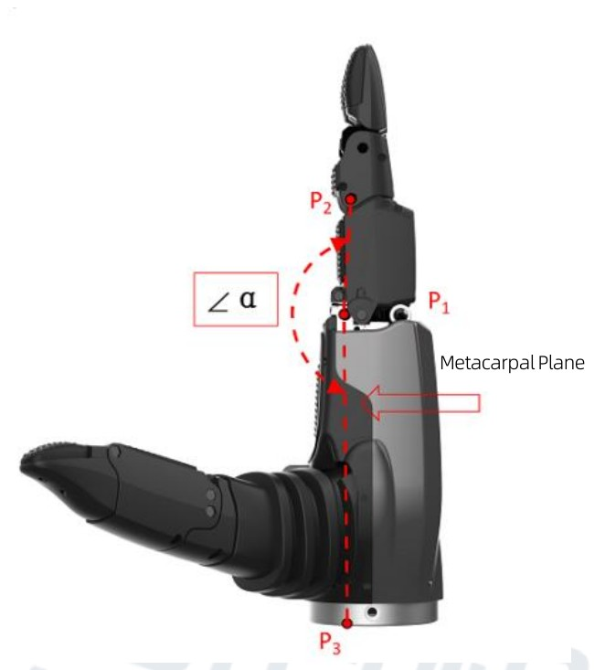
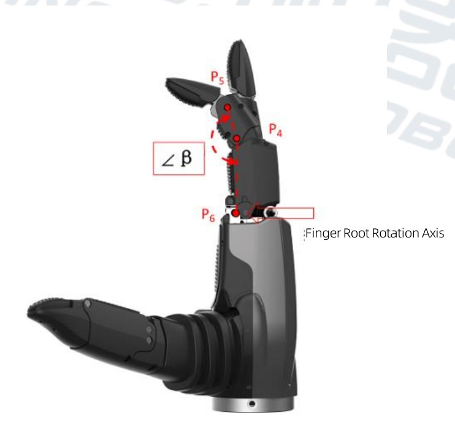
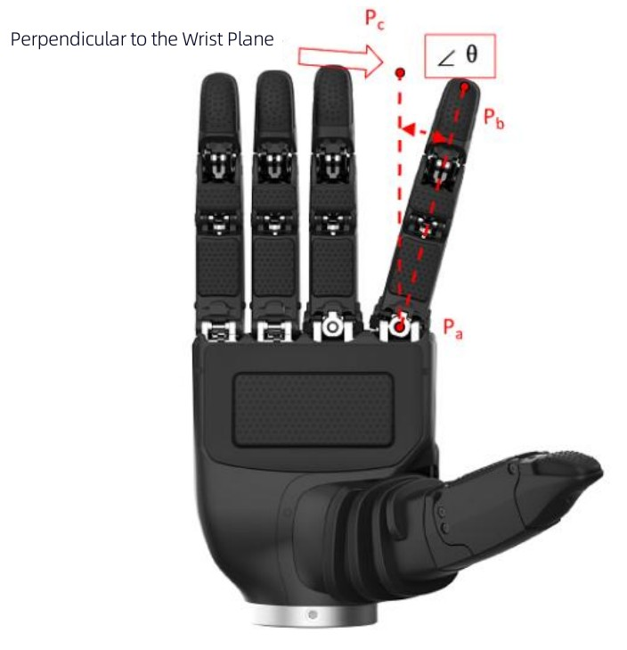
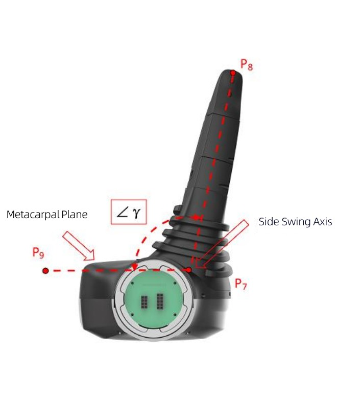
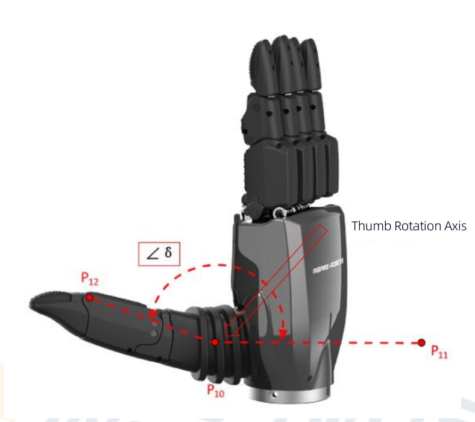
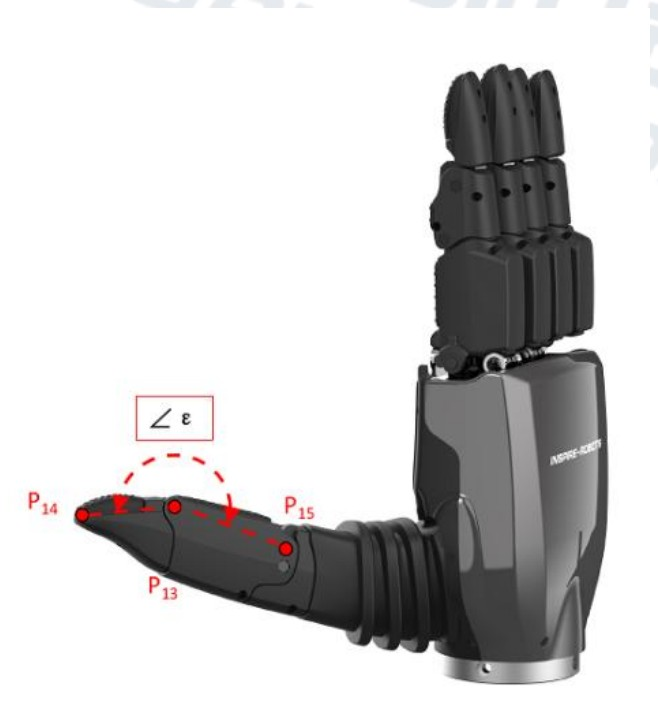
그림의 기호(각 α ~ 각 ε, P1 ~ P15)는 원문 그림에만 있고 원문 표의 글에는 없습니다. 표의 범위를 0.1° 단위로 바꾸면 위 각도 설정값 표의 범위와 같습니다 (예: 90° ~ 165° = 900 ~ 1650).
원문 판 기록대로 각도 범위는 V1.1 · V1.3에서 바뀌었습니다. 중국어판 V1.0의 범위는 뿌리 관절 965 ~ 1800, 중간 관절 1050 ~ 1850, 엄지 옆 벌림 600 ~ 1700, 엄지 첫째 관절 1000 ~ 1550, 엄지 둘째 관절 1450 ~ 2040입니다. 이 책은 V1.4의 값을 옮겼습니다.
자유도별 힘 제어 임계값 설정값 (1094 ~ 1106)
이 레지스터 그룹은 레지스터 13개로 이루어지며, 손 13자유도의 힘 제어 임계값 설정값에 대응합니다. 이 파라미터는 저장되지 않아 전원이 꺼지면 사라집니다. 단위는 g입니다. 이 그룹으로 손가락의 쥐는 힘을 제어할 수 있습니다.
예를 들어 검지의 힘 제어 임계값을 100으로 정했고 검지의 현재 실제 각도가 1650(완전히 편 상태)일 때, 검지의 각도 설정값을 900으로 정하면 검지가 손바닥 쪽으로 굽습니다. 굽는 동안 검지에 걸리는 실제 힘이 100에 이른 것이 감지되면 검지는 움직임을 멈추고, 그렇지 않으면 정한 각도까지 움직입니다.
| 주소 | 설명 | 자료형 | 범위 |
|---|---|---|---|
| 1094 | 1번 전동 실린더 힘 제어 설정값 | INT16 | 0 ~ 1000 |
| 1095 | 2번 전동 실린더 힘 제어 설정값 | INT16 | 0 ~ 1000 |
| 1096 | 3번 전동 실린더 힘 제어 설정값 | INT16 | 0 ~ 1000 |
| 1097 | 4번 전동 실린더 힘 제어 설정값 | INT16 | 0 ~ 1000 |
| 1098 | 5번 전동 실린더 힘 제어 설정값 | INT16 | 0 ~ 1000 |
| 1099 | 6번 전동 실린더 힘 제어 설정값 | INT16 | 0 ~ 1000 |
| 1100 | 7번 전동 실린더 힘 제어 설정값 | INT16 | 0 ~ 1000 |
| 1101 | 8번 전동 실린더 힘 제어 설정값 | INT16 | 0 ~ 1000 |
| 1102 | 9번 전동 실린더 힘 제어 설정값 | INT16 | 0 ~ 1000 |
| 1103 | 10번 전동 실린더 힘 제어 설정값 | INT16 | 0 ~ 1000 |
| 1104 | 11번 전동 실린더 힘 제어 설정값 | INT16 | 0 ~ 1000 |
| 1105 | 12번 전동 실린더 힘 제어 설정값 | INT16 | 0 ~ 1000 |
| 1106 | 13번 전동 실린더 힘 제어 설정값 | INT16 | 0 ~ 1000 |
이 레지스터 값은 그 손가락 끝에 걸리는 힘입니다. 예를 들어 약지의 힘 제어 임계값을 200으로 정하면 약지 끝이 200 g의 쥐는 힘을 낼 수 있다는 뜻입니다. (물체에 닿는 부분이 손가락 끝이 아니면 낼 수 있는 쥐는 힘이 달라집니다. 힘의 크기는 힘의 팔 길이와 관계가 있어, 힘의 팔이 짧을수록 쥐는 힘이 커집니다.)
원문 예는 '검지의 현재 실제 각도를 1650으로 정한다'고 적었으나, 실제 각도(1136 ~ 1148)는 읽기 전용입니다. 이 책은 '1650일 때'로 옮겼습니다.
중국어판 V1.0은 이 절에 다음 주의를 더 적습니다: 4번 · 6번 전동 실린더는 검지 · 중지의 옆 벌림을 맡으며, 힘 제어 설정값은 3번 · 5번 전동 실린더와 같고, 검지 · 중지 손끝의 힘 제어는 3번 · 5번의 설정값을 기준으로 적용됩니다. V1.4에는 이 문장이 없습니다.
자유도별 속도 설정값 (1108 ~ 1120)
이 레지스터 그룹은 레지스터 13개로 이루어지며, 손 13자유도의 속도 설정값에 대응합니다. 이 파라미터는 저장되지 않아 전원이 꺼지면 사라지며, 범위 값에는 단위가 없습니다.
| 주소 | 설명 | 자료형 | 범위 |
|---|---|---|---|
| 1108 | 1번 전동 실린더 속도 설정값 | INT16 | 0 ~ 2500 |
| 1109 | 2번 전동 실린더 속도 설정값 | INT16 | 0 ~ 2500 |
| 1110 | 3번 전동 실린더 속도 설정값 | INT16 | 0 ~ 2500 |
| 1111 | 4번 전동 실린더 속도 설정값 | INT16 | 0 ~ 2500 |
| 1112 | 5번 전동 실린더 속도 설정값 | INT16 | 0 ~ 2500 |
| 1113 | 6번 전동 실린더 속도 설정값 | INT16 | 0 ~ 2500 |
| 1114 | 7번 전동 실린더 속도 설정값 | INT16 | 0 ~ 2500 |
| 1115 | 8번 전동 실린더 속도 설정값 | INT16 | 0 ~ 2500 |
| 1116 | 9번 전동 실린더 속도 설정값 | INT16 | 0 ~ 2500 |
| 1117 | 10번 전동 실린더 속도 설정값 | INT16 | 0 ~ 2500 |
| 1118 | 11번 전동 실린더 속도 설정값 | INT16 | 0 ~ 2500 |
| 1119 | 12번 전동 실린더 속도 설정값 | INT16 | 0 ~ 2500 |
| 1120 | 13번 전동 실린더 속도 설정값 | INT16 | 0 ~ 2500 |
속도 = 2000은 무부하 상태의 손가락이 큰 각도에서 최소 각도까지 1000 ms에 움직인다는 뜻입니다. 부하가 크면 실제 속도는 이보다 조금 느립니다.
상태 읽기 문서
자유도별 액추에이터 실제 위치 (1122 ~ 1134)
이 레지스터 그룹은 레지스터 13개로 이루어지며, 손 13자유도 액추에이터의 현재 실제 위치에 대응합니다. 읽기만 할 수 있으며, 범위 값에는 단위가 없습니다.
| 주소 | 설명 | 자료형 | 범위 |
|---|---|---|---|
| 1122 | 1번 전동 실린더 액추에이터 실제 위치 | INT16 | 0 ~ 2000 |
| 1123 | 2번 전동 실린더 액추에이터 실제 위치 | INT16 | 0 ~ 2000 |
| 1124 | 3번 전동 실린더 액추에이터 실제 위치 | INT16 | 0 ~ 2000 |
| 1125 | 4번 전동 실린더 액추에이터 실제 위치 | INT16 | 0 ~ 2000 |
| 1126 | 5번 전동 실린더 액추에이터 실제 위치 | INT16 | 0 ~ 2000 |
| 1127 | 6번 전동 실린더 액추에이터 실제 위치 | INT16 | 0 ~ 2000 |
| 1128 | 7번 전동 실린더 액추에이터 실제 위치 | INT16 | 0 ~ 2000 |
| 1129 | 8번 전동 실린더 액추에이터 실제 위치 | INT16 | 0 ~ 2000 |
| 1130 | 9번 전동 실린더 액추에이터 실제 위치 | INT16 | 0 ~ 2000 |
| 1131 | 10번 전동 실린더 액추에이터 실제 위치 | INT16 | 0 ~ 2000 |
| 1132 | 11번 전동 실린더 액추에이터 실제 위치 | INT16 | 0 ~ 2000 |
| 1133 | 12번 전동 실린더 액추에이터 실제 위치 | INT16 | 0 ~ 2000 |
| 1134 | 13번 전동 실린더 액추에이터 실제 위치 | INT16 | 0 ~ 2000 |
0은 액추에이터 최소 스트로크로 손가락 최대 각도, 2000은 최대 스트로크로 손가락 최소 각도에 해당합니다.
자유도별 실제 각도 (1136 ~ 1148)
이 레지스터 그룹은 레지스터 13개로 이루어지며, 손 13자유도의 현재 실제 각도에 대응합니다. 읽기만 할 수 있으며, 단위는 0.1°입니다. 각도의 정의는 위 표 39를 보십시오.
| 주소 | 설명 | 자료형 | 범위 |
|---|---|---|---|
| 1136 | 새끼손가락 뿌리 관절 각도 실제값 | INT16 | 900 ~ 1650 |
| 1137 | 약지 뿌리 관절 각도 실제값 | INT16 | 900 ~ 1650 |
| 1138 | 중지 뿌리 관절 각도 실제값 | INT16 | 900 ~ 1650 |
| 1139 | 중지 옆 벌림 각도 실제값 | INT16 | −150 ~ 150 |
| 1140 | 검지 뿌리 관절 각도 실제값 | INT16 | 900 ~ 1650 |
| 1141 | 검지 옆 벌림 각도 실제값 | INT16 | −150 ~ 150 |
| 1142 | 새끼손가락 중간 관절 각도 실제값 | INT16 | 1050 ~ 1900 |
| 1143 | 약지 중간 관절 각도 실제값 | INT16 | 1050 ~ 1900 |
| 1144 | 중지 중간 관절 각도 실제값 | INT16 | 1050 ~ 1900 |
| 1145 | 검지 중간 관절 각도 실제값 | INT16 | 1050 ~ 1900 |
| 1146 | 엄지 옆 벌림 각도 실제값 | INT16 | 650 ~ 1750 |
| 1147 | 엄지 첫째 관절 굽힘 각도 실제값 | INT16 | 1250 ~ 1600 |
| 1148 | 엄지 둘째 관절 굽힘 각도 실제값 | INT16 | 1500 ~ 2040 |
손가락별 실제 힘 (1150 ~ 1162)
이 레지스터 그룹은 레지스터 13개로 이루어지며, 손의 13개 전동 실린더에 걸리는 실제 힘에 대응합니다. 읽기만 할 수 있으며, 단위는 g입니다.
| 주소 | 설명 | 자료형 | 범위 |
|---|---|---|---|
| 1150 | 1번 전동 실린더에 걸리는 실제 힘 | INT16 | −1000 ~ 1000 |
| 1151 | 2번 전동 실린더에 걸리는 실제 힘 | INT16 | −1000 ~ 1000 |
| 1152 | 3번 전동 실린더에 걸리는 실제 힘 | INT16 | −1000 ~ 1000 |
| 1153 | 4번 전동 실린더에 걸리는 실제 힘 | INT16 | −1000 ~ 1000 |
| 1154 | 5번 전동 실린더에 걸리는 실제 힘 | INT16 | −1000 ~ 1000 |
| 1155 | 6번 전동 실린더에 걸리는 실제 힘 | INT16 | −1000 ~ 1000 |
| 1156 | 7번 전동 실린더에 걸리는 실제 힘 | INT16 | −1000 ~ 1000 |
| 1157 | 8번 전동 실린더에 걸리는 실제 힘 | INT16 | −1000 ~ 1000 |
| 1158 | 9번 전동 실린더에 걸리는 실제 힘 | INT16 | −1000 ~ 1000 |
| 1159 | 10번 전동 실린더에 걸리는 실제 힘 | INT16 | −1000 ~ 1000 |
| 1160 | 11번 전동 실린더에 걸리는 실제 힘 | INT16 | −1000 ~ 1000 |
| 1161 | 12번 전동 실린더에 걸리는 실제 힘 | INT16 | −1000 ~ 1000 |
| 1162 | 13번 전동 실린더에 걸리는 실제 힘 | INT16 | −1000 ~ 1000 |
중국어판 V1.0은 범위를 0 ~ 1000으로 적고, 7 ~ 10번 전동 실린더는 힘 센서가 없어 실제 힘 값에 뜻이 없다고 적습니다. V1.4의 범위는 −1000 ~ 1000입니다.
자유도별 액추에이터 전류 (1164 ~ 1176)
이 레지스터 그룹은 레지스터 13개로 이루어지며, 손 액추에이터 13개의 전류에 대응합니다. 읽기만 할 수 있으며, 단위는 mA입니다.
| 주소 | 설명 | 자료형 | 범위 |
|---|---|---|---|
| 1164 | 1번 전동 실린더 액추에이터 전류 | INT16 | 0 ~ 1500 |
| 1165 | 2번 전동 실린더 액추에이터 전류 | INT16 | 0 ~ 1500 |
| 1166 | 3번 전동 실린더 액추에이터 전류 | INT16 | 0 ~ 1500 |
| 1167 | 4번 전동 실린더 액추에이터 전류 | INT16 | 0 ~ 1500 |
| 1168 | 5번 전동 실린더 액추에이터 전류 | INT16 | 0 ~ 1500 |
| 1169 | 6번 전동 실린더 액추에이터 전류 | INT16 | 0 ~ 1500 |
| 1170 | 7번 전동 실린더 액추에이터 전류 | INT16 | 0 ~ 1500 |
| 1171 | 8번 전동 실린더 액추에이터 전류 | INT16 | 0 ~ 1500 |
| 1172 | 9번 전동 실린더 액추에이터 전류 | INT16 | 0 ~ 1500 |
| 1173 | 10번 전동 실린더 액추에이터 전류 | INT16 | 0 ~ 1500 |
| 1174 | 11번 전동 실린더 액추에이터 전류 | INT16 | 0 ~ 1500 |
| 1175 | 12번 전동 실린더 액추에이터 전류 | INT16 | 0 ~ 1500 |
| 1176 | 13번 전동 실린더 액추에이터 전류 | INT16 | 0 ~ 1500 |
액추에이터 오류 코드 (1178 ~ 1190)
이 레지스터 그룹은 레지스터 13개로 이루어지며, 손 액추에이터 13개의 오류 코드에 대응합니다. 읽기만 할 수 있습니다.
| 주소 | 설명 | 자료형 |
|---|---|---|
| 1178 | 1번 전동 실린더 오류 코드 | INT16 |
| 1179 | 2번 전동 실린더 오류 코드 | INT16 |
| 1180 | 3번 전동 실린더 오류 코드 | INT16 |
| 1181 | 4번 전동 실린더 오류 코드 | INT16 |
| 1182 | 5번 전동 실린더 오류 코드 | INT16 |
| 1183 | 6번 전동 실린더 오류 코드 | INT16 |
| 1184 | 7번 전동 실린더 오류 코드 | INT16 |
| 1185 | 8번 전동 실린더 오류 코드 | INT16 |
| 1186 | 9번 전동 실린더 오류 코드 | INT16 |
| 1187 | 10번 전동 실린더 오류 코드 | INT16 |
| 1188 | 11번 전동 실린더 오류 코드 | INT16 |
| 1189 | 12번 전동 실린더 오류 코드 | INT16 |
| 1190 | 13번 전동 실린더 오류 코드 | INT16 |
| 비트 | 설명 |
|---|---|
| Bit0 | 구속(locked-rotor) 오류 |
| Bit1 | 과열 오류 |
| Bit2 | 과전류 오류 |
| Bit3 | 모터 동작 이상 |
| Bit4 | 통신 오류 |
예를 들어 검지의 오류 코드가 0x06(2진수 00000110)이면 검지 액추에이터에 과열 오류와 과전류 오류가 났다는 뜻입니다.
자유도별 상태 정보 (1192 ~ 1204)
이 레지스터 그룹은 레지스터 13개로 이루어지며, 손 13자유도의 상태 정보에 대응합니다. 읽기만 할 수 있습니다.
| 주소 | 설명 | 자료형 |
|---|---|---|
| 1192 | 1번 전동 실린더 상태 정보 | INT16 |
| 1193 | 2번 전동 실린더 상태 정보 | INT16 |
| 1194 | 3번 전동 실린더 상태 정보 | INT16 |
| 1195 | 4번 전동 실린더 상태 정보 | INT16 |
| 1196 | 5번 전동 실린더 상태 정보 | INT16 |
| 1197 | 6번 전동 실린더 상태 정보 | INT16 |
| 1198 | 7번 전동 실린더 상태 정보 | INT16 |
| 1199 | 8번 전동 실린더 상태 정보 | INT16 |
| 1200 | 9번 전동 실린더 상태 정보 | INT16 |
| 1201 | 10번 전동 실린더 상태 정보 | INT16 |
| 1202 | 11번 전동 실린더 상태 정보 | INT16 |
| 1203 | 12번 전동 실린더 상태 정보 | INT16 |
| 1204 | 13번 전동 실린더 상태 정보 | INT16 |
| 코드 | 설명 |
|---|---|
| 0 | 펴는 중 |
| 1 | 쥐는 중 |
| 2 | 목표 위치에 이르러 멈춤 |
| 3 | 정한 힘 제어값에 이르러 멈춤 |
| 5 | 전류 보호로 멈춤 |
| 6 | 액추에이터 구속으로 멈춤 |
| 7 | 액추에이터 고장으로 멈춤 |
원문의 상태 코드 표에는 4가 없습니다.
액추에이터 온도 (1206 ~ 1218)
이 레지스터 그룹은 레지스터 13개로 이루어지며, 손 액추에이터 13개의 온도 값에 대응합니다. 읽기만 할 수 있으며, 단위는 °C입니다.
| 주소 | 설명 | 자료형 | 범위 |
|---|---|---|---|
| 1206 | 1번 전동 실린더 액추에이터 온도 | INT16 | 0 ~ 100 |
| 1207 | 2번 전동 실린더 액추에이터 온도 | INT16 | 0 ~ 100 |
| 1208 | 3번 전동 실린더 액추에이터 온도 | INT16 | 0 ~ 100 |
| 1209 | 4번 전동 실린더 액추에이터 온도 | INT16 | 0 ~ 100 |
| 1210 | 5번 전동 실린더 액추에이터 온도 | INT16 | 0 ~ 100 |
| 1211 | 6번 전동 실린더 액추에이터 온도 | INT16 | 0 ~ 100 |
| 1212 | 7번 전동 실린더 액추에이터 온도 | INT16 | 0 ~ 100 |
| 1213 | 8번 전동 실린더 액추에이터 온도 | INT16 | 0 ~ 100 |
| 1214 | 9번 전동 실린더 액추에이터 온도 | INT16 | 0 ~ 100 |
| 1215 | 10번 전동 실린더 액추에이터 온도 | INT16 | 0 ~ 100 |
| 1216 | 11번 전동 실린더 액추에이터 온도 | INT16 | 0 ~ 100 |
| 1217 | 12번 전동 실린더 액추에이터 온도 | INT16 | 0 ~ 100 |
| 1218 | 13번 전동 실린더 액추에이터 온도 | INT16 | 0 ~ 100 |
손가락 동작 모드 (1220 ~ 1232) 문서
이 레지스터 그룹으로 자유도마다 동작 모드를 정합니다.
- 0 · 속도-힘 보호 모드: 설정 위치 · 설정 속도 · 설정 힘으로 손가락 움직임을 제어하고, 설정 힘이나 설정 위치에 이르면 손가락이 멈춥니다.
- 1 · 힘 폐루프 모드: 설정 힘을 기준으로 힘 폐루프 제어를 하며, 손가락이 설정 힘을 따라가도록 제어합니다.
검지 · 중지의 MCP 관절(뿌리 관절)을 힘 제어 모드로 정할 때는 그 손가락의 옆 벌림 자유도도 힘 제어 모드로 정하십시오.
| 주소 | 설명 | 범위 | 자료형 |
|---|---|---|---|
| 1220 | 새끼손가락 뿌리 관절 동작 모드 | 0 · 1 | INT16 |
| 1221 | 약지 뿌리 관절 동작 모드 | 0 · 1 | INT16 |
| 1222 | 중지 뿌리 관절 동작 모드 | 0 · 1 | INT16 |
| 1223 | 중지 옆 벌림 동작 모드 | 0 · 1 | INT16 |
| 1224 | 검지 뿌리 관절 동작 모드 | 0 · 1 | INT16 |
| 1225 | 약지 옆 벌림 동작 모드 (원문 그대로) | 0 · 1 | INT16 |
| 1226 | 새끼손가락 중간 관절 동작 모드 | 0 · 1 | INT16 |
| 1227 | 약지 중간 관절 동작 모드 | 0 · 1 | INT16 |
| 1228 | 중지 중간 관절 동작 모드 | 0 · 1 | INT16 |
| 1229 | 검지 중간 관절 동작 모드 | 0 · 1 | INT16 |
| 1230 | 엄지 옆 벌림 동작 모드 | 0 · 1 | INT16 |
| 1231 | 엄지 첫째 관절 굽힘 동작 모드 | 0 · 1 | INT16 |
| 1232 | 엄지 둘째 관절 굽힘 동작 모드 | 0 · 1 | INT16 |
- 본문은 '여섯 손가락에 대응하는 레지스터 여섯 개'라고 적었지만, 표에는 레지스터 13개(1220 ~ 1232)가 있습니다. 중국어판 V1.0은 13개로 적습니다.
- 1225의 설명이 '약지 옆 벌림'으로 적혀 있습니다. 각도 레지스터 순서(1085 검지 옆 벌림)와 중국어판 V1.0으로 보면 '검지 옆 벌림'이어야 합니다.
촉각 센서와 내장 동작
손가락 끝과 손바닥의 정전식 촉각 센서 데이터는 레지스터 3000 ~ 3033에서 읽습니다. 손에 저장된 내장 동작 30가지는 레지스터 1431 · 1432로 실행합니다. 문서
촉각 데이터 형식 문서
손가락에는 정전식 촉각 센서가 있습니다. 이 센서는 손끝의 법선력 · 접선력 · 접선력 방향 데이터를 알려 줍니다. 데이터와 실제 힘의 관계는 '읽은 값 1024 = 실제 힘 10.24 N'입니다. 접선력 방향은 0° ~ 359°이며, 손끝이 향한 방향에서 시계 방향으로 커집니다 (그림 12). 얻은 접선력 데이터가 0xFFFF이면 각도가 유효하지 않습니다. 데이터 주소와 내용은 표 52에 있습니다.
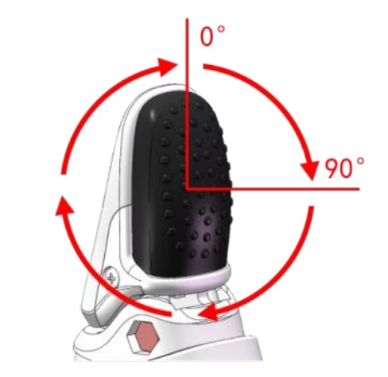
| 주소 | 뜻 | 자료형 | 분해능 | 권한 |
|---|---|---|---|---|
| 3000 | 새끼손가락 촉각 법선력 데이터 | UINT16 | 0.01 N | R |
| 3001 | 새끼손가락 촉각 접선력 데이터 | UINT16 | 0.01 N | R |
| 3002 | 새끼손가락 촉각 접선력 방향 | UINT16 | 도(°) | R |
| 3003 | 새끼손가락 촉각 근접값 하위 16비트 | UINT16 | 24비트 | R |
| 3004 | 새끼손가락 촉각 근접값 상위 16비트 | UINT16 | ||
| 3005 | 약지 촉각 법선력 데이터 | UINT16 | 0.01 N | R |
| 3006 | 약지 촉각 접선력 데이터 | UINT16 | 0.01 N | R |
| 3007 | 약지 촉각 접선력 방향 | UINT16 | 도(°) | R |
| 3008 | 약지 촉각 근접값 하위 16비트 | UINT16 | 24비트 | R |
| 3009 | 약지 촉각 근접값 상위 16비트 | UINT16 | ||
| 3010 | 중지 촉각 법선력 데이터 | UINT16 | 0.01 N | R |
| 3011 | 중지 촉각 접선력 데이터 | UINT16 | 0.01 N | R |
| 3012 | 중지 촉각 접선력 방향 | UINT16 | 도(°) | R |
| 3013 | 중지 촉각 근접값 하위 16비트 | UINT16 | 24비트 | R |
| 3014 | 중지 촉각 근접값 상위 16비트 | UINT16 | ||
| 3015 | 검지 촉각 법선력 데이터 | UINT16 | 0.01 N | R |
| 3016 | 검지 촉각 접선력 데이터 | UINT16 | 0.01 N | R |
| 3017 | 검지 촉각 접선력 방향 | UINT16 | 도(°) | R |
| 3018 | 검지 촉각 근접값 하위 16비트 | UINT16 | 24비트 | R |
| 3019 | 검지 촉각 근접값 상위 16비트 | UINT16 | ||
| 3020 | 엄지 촉각 법선력 데이터 | UINT16 | 0.01 N | R |
| 3021 | 엄지 촉각 접선력 데이터 | UINT16 | 0.01 N | R |
| 3022 | 엄지 촉각 접선력 방향 | UINT16 | 도(°) | R |
| 3023 | 엄지 촉각 근접값 하위 16비트 | UINT16 | 24비트 | R |
| 3024 | 엄지 촉각 근접값 상위 16비트 | UINT16 | ||
| 3025 | 손바닥(오른쪽) 촉각 법선력 데이터 | UINT16 | 0.01 N | R |
| 3026 | 손바닥(오른쪽) 촉각 접선력 데이터 | UINT16 | 0.01 N | R |
| 3027 | 손바닥(오른쪽) 촉각 접선력 방향 | UINT16 | 도(°) | R |
| 3028 | 손바닥(가운데) 촉각 법선력 데이터 | UINT16 | 0.01 N | R |
| 3029 | 손바닥(가운데) 촉각 접선력 데이터 | UINT16 | 0.01 N | R |
| 3030 | 손바닥(가운데) 촉각 접선력 방향 | UINT16 | 도(°) | R |
| 3031 | 손바닥(왼쪽) 촉각 법선력 데이터 | UINT16 | 0.01 N | R |
| 3032 | 손바닥(왼쪽) 촉각 접선력 데이터 | UINT16 | 0.01 N | R |
| 3033 | 손바닥(왼쪽) 촉각 접선력 방향 | UINT16 | 도(°) | R |
촉각 레지스터는 모두 34개(68바이트)입니다. 근접값은 24비트 값이며, 하위 16비트와 상위 16비트 레지스터 두 개에 나뉘어 있습니다.
- 원문은 접선력 방향 그림을 '그림 4'라고 적었는데, 그림 4는 이미 전동 실린더 배치 그림(3장)의 번호입니다.
- 본문은 손가락의 센서만 말하지만, 표에는 손바닥(오른쪽 · 가운데 · 왼쪽) 데이터도 있습니다. 손바닥에는 근접값이 없습니다.
- '접선력 데이터가 0xFFFF이면 각도가 유효하지 않다'는 문장의 데이터는 접선력 방향 레지스터로 보입니다.
내장 동작 문서
주소: 1431(0x0597), 1432(0x0598)
손에는 내장 동작 30가지가 있습니다. 1431(0x0597)에는 실행할 동작 번호(범위 1 ~ 30)를 쓰며, 번호마다 손 모양이 다릅니다. 예를 들어 1431을 1로 정하면 주먹 쥐기 동작이 선택됩니다. 1432(0x0598)는 동작 실행(Enable) 플래그로, 1을 쓰면 동작을 실행합니다. 동작을 확실히 실행하기 위해 손은 실행 신호를 받으면 먼저 편 상태로 돌아간 뒤 그 손 모양을 취합니다. 모든 자유도가 목표 위치에 이르면 1432는 저절로 0이 됩니다.
| 번호 | 원문 이름 | 뜻 | 번호 | 원문 이름 | 뜻 |
|---|---|---|---|---|---|
| 1 | 握拳 | 주먹 쥐기 | 16 | 侧捏 | 옆으로 집기 |
| 2 | 五指张开 | 다섯 손가락 펴기 | 17 | 夹笔 1 | 펜 끼워 잡기 1 |
| 3 | 比耶 | 브이(V) 손 모양 | 18 | 夹笔 2 | 펜 끼워 잡기 2 |
| 4 | OK | OK 손 모양 | 19 | 捏瓶盖 | 병뚜껑 집기 |
| 5 | 中指捏 | 중지로 집기 | 20 | 点赞 | 엄지 척 |
| 6 | 三指捏 1 | 세 손가락으로 집기 1 | 21 | 抓握按压 | 쥐고 누르기 |
| 7 | 两指夹 | 두 손가락 사이에 끼우기 | 22 | 五指抠/抓 | 다섯 손가락으로 긁어 쥐기 · 움켜쥐기 |
| 8 | 握鼠标 | 마우스 쥐기 | 23 | 拿筷子 | 젓가락 쥐기 |
| 9 | 666 | 666 손 모양 | 24 | 抽卡片捏 | 카드를 뽑아 집기 |
| 10 | 三指捏 2 | 세 손가락으로 집기 2 | 25 | 三指捏圆球 | 세 손가락으로 공 집기 |
| 11 | 单指点 | 한 손가락으로 누르기 | 26 | 五指握 | 다섯 손가락으로 쥐기 |
| 12 | 单指弯钩 | 한 손가락 갈고리 | 27 | 两指捏圆球 | 두 손가락으로 공 집기 |
| 13 | 四指托 | 네 손가락으로 받치기 | 28 | 比心 | 손가락 하트 |
| 14 | 摇滚手势 | 록 손 모양 | 29 | 单指捏握 | 한 손가락으로 집어 쥐기 |
| 15 | 五指抓 | 다섯 손가락으로 움켜쥐기 | 30 | 无名指对捏 | 약지와 엄지 맞대어 집기 |
영문판 원문도 동작 이름을 중국어로만 적었습니다. '뜻' 칸은 이 책이 옮긴 것이며, 실제 손 모양은 손에서 실행해 확인하십시오.
EtherCAT
EtherCAT에서는 PDO로 실제 각도 · 힘 · 오류 · 온도 · 촉각 데이터를 읽고 각도 · 힘 · 속도 설정값을 쓰며, SDO로 ID · 저장 같은 설정을 다룹니다. 문서
EtherCAT 개요 문서
EtherCAT 버스의 I/O 모드는 실시간 이더넷을 바탕으로 한 효율적인 데이터 교환 방식입니다. 분산 클록 동기화와 프로세스 데이터 객체(PDO)로 지연이 매우 짧은 입출력 제어를 하는 것이 핵심입니다. 현재 이 손의 EtherCAT은 I/O 프로토콜만 지원하며, CiA402 프로토콜과 DC 모드는 지원하지 않습니다.
PDO 객체 사전 문서
원문의 PDO 객체 사전 표 하나를 인덱스별로 세 표로 나눴습니다. 0x6000 · 0x6010은 손이 보내는 입력(읽기), 0x7000은 손에 쓰는 출력입니다. 단위와 범위는 원문 PDO 표에 없으므로 7장 · 8장의 같은 뜻 레지스터를 참고하십시오.
| 인덱스:서브 | 이름 | 뜻 | 자료형 | 권한 |
|---|---|---|---|---|
| 0x6000:01 | ANGLEACT1 | 새끼손가락 뿌리 관절 각도 실제값 | INT16 | R |
| 0x6000:02 | ANGLEACT2 | 약지 뿌리 관절 각도 실제값 | INT16 | R |
| 0x6000:03 | ANGLEACT3 | 중지 뿌리 관절 각도 실제값 | INT16 | R |
| 0x6000:04 | ANGLEACT4 | 중지 옆 벌림 각도 실제값 | INT16 | R |
| 0x6000:05 | ANGLEACT5 | 검지 뿌리 관절 각도 실제값 | INT16 | R |
| 0x6000:06 | ANGLEACT6 | 검지 옆 벌림 각도 실제값 | INT16 | R |
| 0x6000:07 | ANGLEACT7 | 새끼손가락 중간 관절 각도 실제값 | INT16 | R |
| 0x6000:08 | ANGLEACT8 | 약지 중간 관절 각도 실제값 | INT16 | R |
| 0x6000:09 | ANGLEACT9 | 중지 중간 관절 각도 실제값 | INT16 | R |
| 0x6000:0A | ANGLEACT10 | 검지 중간 관절 각도 실제값 | INT16 | R |
| 0x6000:0B | ANGLEACT11 | 엄지 옆 벌림 각도 실제값 | INT16 | R |
| 0x6000:0C | ANGLEAC12 | 엄지 첫째 관절 굽힘 각도 실제값 | INT16 | R |
| 0x6000:0D | ANGLEAC13 | 엄지 둘째 관절 굽힘 각도 실제값 | INT16 | R |
| 0x6000:0E | FORCEACT1 | 1번 전동 실린더에 걸리는 실제 힘 | INT16 | R |
| 0x6000:0F | FORCEACT2 | 2번 전동 실린더에 걸리는 실제 힘 | INT16 | R |
| 0x6000:10 | FORCEACT3 | 3번 전동 실린더에 걸리는 실제 힘 | INT16 | R |
| 0x6000:11 | FORCEACT4 | 4번 전동 실린더에 걸리는 실제 힘 | INT16 | R |
| 0x6000:12 | FORCEACT5 | 5번 전동 실린더에 걸리는 실제 힘 | INT16 | R |
| 0x6000:13 | FORCEACT6 | 6번 전동 실린더에 걸리는 실제 힘 | INT16 | R |
| 0x6000:14 | FORCEACT7 | 7번 전동 실린더에 걸리는 실제 힘 | INT16 | R |
| 0x6000:15 | FORCEACT8 | 8번 전동 실린더에 걸리는 실제 힘 | INT16 | R |
| 0x6000:16 | FORCEACT9 | 9번 전동 실린더에 걸리는 실제 힘 | INT16 | R |
| 0x6000:17 | FORCEACT10 | 10번 전동 실린더에 걸리는 실제 힘 | INT16 | R |
| 0x6000:18 | FORCEACT11 | 11번 전동 실린더에 걸리는 실제 힘 | INT16 | R |
| 0x6000:19 | FORCEACT12 | 12번 전동 실린더에 걸리는 실제 힘 | INT16 | R |
| 0x6000:1A | FORCEACT13 | 13번 전동 실린더에 걸리는 실제 힘 | INT16 | R |
| 0x6000:1B | ERROR1 | 1번 전동 실린더 오류 코드 | INT16 | R |
| 0x6000:1C | ERROR2 | 2번 전동 실린더 오류 코드 | INT16 | R |
| 0x6000:1D | ERROR3 | 3번 전동 실린더 오류 코드 | INT16 | R |
| 0x6000:1E | ERROR4 | 4번 전동 실린더 오류 코드 | INT16 | R |
| 0x6000:1F | ERROR5 | 5번 전동 실린더 오류 코드 | INT16 | R |
| 0x6000:20 | ERROR6 | 6번 전동 실린더 오류 코드 | INT16 | R |
| 0x6000:21 | ERROR7 | 7번 전동 실린더 오류 코드 | INT16 | R |
| 0x6000:22 | ERROR8 | 8번 전동 실린더 오류 코드 | INT16 | R |
| 0x6000:23 | ERROR9 | 9번 전동 실린더 오류 코드 | INT16 | R |
| 0x6000:24 | ERROR10 | 10번 전동 실린더 오류 코드 | INT16 | R |
| 0x6000:25 | ERROR11 | 11번 전동 실린더 오류 코드 | INT16 | R |
| 0x6000:26 | ERROR12 | 12번 전동 실린더 오류 코드 | INT16 | R |
| 0x6000:27 | ERROR13 | 13번 전동 실린더 오류 코드 | INT16 | R |
| 0x6000:28 | TEMP1 | 1번 전동 실린더 액추에이터 온도 | INT16 | R |
| 0x6000:29 | TEMP2 | 2번 전동 실린더 액추에이터 온도 | INT16 | R |
| 0x6000:2A | TEMP3 | 3번 전동 실린더 액추에이터 온도 | INT16 | R |
| 0x6000:2B | TEMP4 | 4번 전동 실린더 액추에이터 온도 | INT16 | R |
| 0x6000:2C | TEMP5 | 5번 전동 실린더 액추에이터 온도 | INT16 | R |
| 0x6000:2D | TEMP6 | 6번 전동 실린더 액추에이터 온도 | INT16 | R |
| 0x6000:2E | TEMP7 | 7번 전동 실린더 액추에이터 온도 | INT16 | R |
| 0x6000:2F | TEMP8 | 8번 전동 실린더 액추에이터 온도 | INT16 | R |
| 0x6000:30 | TEMP9 | 9번 전동 실린더 액추에이터 온도 | INT16 | R |
| 0x6000:31 | TEMP10 | 10번 전동 실린더 액추에이터 온도 | INT16 | R |
| 0x6000:32 | TEMP11 | 11번 전동 실린더 액추에이터 온도 | INT16 | R |
| 0x6000:33 | TEMP12 | 12번 전동 실린더 액추에이터 온도 | INT16 | R |
| 0x6000:34 | TEMP13 | 13번 전동 실린더 액추에이터 온도 | INT16 | R |
| 인덱스:서브 | 이름 | 뜻 | 자료형 | 권한 |
|---|---|---|---|---|
| 0x6010:01 | Touch_group1_data1 | 새끼손가락 촉각 법선력 데이터 | UINT16 | R |
| 0x6010:02 | Touch_group1_data2 | 새끼손가락 촉각 접선력 데이터 | UINT16 | R |
| 0x6010:03 | Touch_group1_data3 | 새끼손가락 촉각 접선력 방향 | UINT16 | R |
| 0x6010:04 | Touch_group1_data4 | 새끼손가락 촉각 근접값 하위 16비트 | UINT16 | R |
| 0x6010:05 | Touch_group1_data5 | 새끼손가락 촉각 근접값 상위 16비트 | UINT16 | R |
| 0x6010:06 | Touch_group1_data6 | 약지 촉각 법선력 데이터 | UINT16 | R |
| 0x6010:07 | Touch_group1_data7 | 약지 촉각 접선력 데이터 | UINT16 | R |
| 0x6010:08 | Touch_group1_data8 | 약지 촉각 접선력 방향 | UINT16 | R |
| 0x6010:09 | Touch_group1_data9 | 약지 촉각 근접값 하위 16비트 | UINT16 | R |
| 0x6010:0A | Touch_group1_data10 | 약지 촉각 근접값 상위 16비트 | UINT16 | R |
| 0x6010:0B | Touch_group1_data11 | 중지 촉각 법선력 데이터 | UINT16 | R |
| 0x6010:0C | Touch_group1_data12 | 중지 촉각 접선력 데이터 | UINT16 | R |
| 0x6010:0D | Touch_group1_data13 | 중지 촉각 접선력 방향 | UINT16 | R |
| 0x6010:0E | Touch_group1_data14 | 중지 촉각 근접값 하위 16비트 | UINT16 | R |
| 0x6010:0F | Touch_group1_data15 | 중지 촉각 근접값 상위 16비트 | UINT16 | R |
| 0x6010:10 | Touch_group1_data16 | 검지 촉각 법선력 데이터 | UINT16 | R |
| 0x6010:11 | Touch_group1_data17 | 검지 촉각 접선력 데이터 | UINT16 | R |
| 0x6010:12 | Touch_group1_data18 | 검지 촉각 접선력 방향 | UINT16 | R |
| 0x6010:13 | Touch_group1_data19 | 검지 촉각 근접값 하위 16비트 | UINT16 | R |
| 0x6010:14 | Touch_group1_data20 | 검지 촉각 근접값 상위 16비트 | UINT16 | R |
| 0x6010:15 | Touch_group1_data21 | 엄지 촉각 법선력 데이터 | UINT16 | R |
| 0x6010:16 | Touch_group1_data22 | 엄지 촉각 접선력 데이터 | UINT16 | R |
| 0x6010:17 | Touch_group1_data23 | 엄지 촉각 접선력 방향 | UINT16 | R |
| 0x6010:18 | Touch_group1_data24 | 엄지 촉각 근접값 하위 16비트 | UINT16 | R |
| 0x6010:19 | Touch_group1_data25 | 엄지 촉각 근접값 상위 16비트 | UINT16 | R |
| 0x6010:1A | Touch_group1_data26 | 손바닥(오른쪽) 촉각 법선력 데이터 | UINT16 | R |
| 0x6010:1B | Touch_group1_data27 | 손바닥(오른쪽) 촉각 접선력 데이터 | UINT16 | R |
| 0x6010:1C | Touch_group1_data28 | 손바닥(오른쪽) 촉각 접선력 방향 | UINT16 | R |
| 0x6010:1D | Touch_group1_data29 | 손바닥(가운데) 촉각 법선력 데이터 | UINT16 | R |
| 0x6010:1E | Touch_group1_data30 | 손바닥(가운데) 촉각 접선력 데이터 | UINT16 | R |
| 0x6010:1F | Touch_group1_data31 | 손바닥(가운데) 촉각 접선력 방향 | UINT16 | R |
| 0x6010:20 | Touch_group1_data32 | 손바닥(왼쪽) 촉각 법선력 데이터 | UINT16 | R |
| 0x6010:21 | Touch_group1_data33 | 손바닥(왼쪽) 촉각 접선력 데이터 | UINT16 | R |
| 0x6010:22 | Touch_group1_data34 | 손바닥(왼쪽) 촉각 접선력 방향 | UINT16 | R |
| 인덱스:서브 | 이름 | 뜻 | 자료형 | 권한 |
|---|---|---|---|---|
| 0x7000:01 | ENABLE_SET | 운동 제어 활성화 | INT16 | R/W |
| 0x7000:02 | ANGLESET1 | 새끼손가락 뿌리 관절 각도 설정값 | INT16 | R/W |
| 0x7000:03 | ANGLESET2 | 약지 뿌리 관절 각도 설정값 | INT16 | R/W |
| 0x7000:04 | ANGLESET3 | 중지 뿌리 관절 각도 설정값 | INT16 | R/W |
| 0x7000:05 | ANGLESET4 | 중지 옆 벌림 각도 설정값 | INT16 | R/W |
| 0x7000:06 | ANGLESET5 | 검지 뿌리 관절 각도 설정값 | INT16 | R/W |
| 0x7000:07 | ANGLESET6 | 검지 옆 벌림 각도 설정값 | INT16 | R/W |
| 0x7000:08 | ANGLESET7 | 새끼손가락 중간 관절 각도 설정값 | INT16 | R/W |
| 0x7000:09 | ANGLESET8 | 약지 중간 관절 각도 설정값 | INT16 | R/W |
| 0x7000:0A | ANGLESET9 | 중지 중간 관절 각도 설정값 | INT16 | R/W |
| 0x7000:0B | ANGLESET10 | 검지 중간 관절 각도 설정값 | INT16 | R/W |
| 0x7000:0C | ANGLESET11 | 엄지 옆 벌림 각도 설정값 | INT16 | R/W |
| 0x7000:0D | ANGLESET12 | 엄지 첫째 관절 굽힘 각도 설정값 | INT16 | R/W |
| 0x7000:0E | ANGLESET13 | 엄지 둘째 관절 굽힘 각도 설정값 | INT16 | R/W |
| 0x7000:0F | FROCESET1 | 1번 전동 실린더 힘 제어 설정값 | INT16 | R/W |
| 0x7000:10 | FROCESET2 | 2번 전동 실린더 힘 제어 설정값 | INT16 | R/W |
| 0x7000:11 | FROCESET3 | 3번 전동 실린더 힘 제어 설정값 | INT16 | R/W |
| 0x7000:12 | FROCESET4 | 4번 전동 실린더 힘 제어 설정값 | INT16 | R/W |
| 0x7000:13 | FROCESET5 | 5번 전동 실린더 힘 제어 설정값 | INT16 | R/W |
| 0x7000:14 | FROCESET6 | 6번 전동 실린더 힘 제어 설정값 | INT16 | R/W |
| 0x7000:15 | FROCESET7 | 7번 전동 실린더 힘 제어 설정값 | INT16 | R/W |
| 0x7000:16 | FROCESET8 | 8번 전동 실린더 힘 제어 설정값 | INT16 | R/W |
| 0x7000:17 | FROCESET9 | 9번 전동 실린더 힘 제어 설정값 | INT16 | R/W |
| 0x7000:18 | FROCESET10 | 10번 전동 실린더 힘 제어 설정값 | INT16 | R/W |
| 0x7000:19 | FROCESET11 | 11번 전동 실린더 힘 제어 설정값 | INT16 | R/W |
| 0x7000:1A | FROCESET12 | 12번 전동 실린더 힘 제어 설정값 | INT16 | R/W |
| 0x7000:1B | FROCESET13 | 13번 전동 실린더 힘 제어 설정값 | INT16 | R/W |
| 0x7000:1C | SPEEDSET1 | 1번 전동 실린더 속도 설정값 | INT16 | R/W |
| 0x7000:1D | SPEEDSET2 | 2번 전동 실린더 속도 설정값 | INT16 | R/W |
| 0x7000:1E | SPEEDSET3 | 3번 전동 실린더 속도 설정값 | INT16 | R/W |
| 0x7000:1F | SPEEDSET4 | 4번 전동 실린더 속도 설정값 | INT16 | R/W |
| 0x7000:20 | SPEEDSET5 | 5번 전동 실린더 속도 설정값 | INT16 | R/W |
| 0x7000:21 | SPEEDSET6 | 6번 전동 실린더 속도 설정값 | INT16 | R/W |
| 0x7000:22 | SPEEDSET7 | 7번 전동 실린더 속도 설정값 | INT16 | R/W |
| 0x7000:23 | SPEEDSET8 | 8번 전동 실린더 속도 설정값 | INT16 | R/W |
| 0x7000:24 | SPEEDSET9 | 9번 전동 실린더 속도 설정값 | INT16 | R/W |
| 0x7000:25 | SPEEDSET10 | 10번 전동 실린더 속도 설정값 | INT16 | R/W |
| 0x7000:26 | SPEEDSET11 | 11번 전동 실린더 속도 설정값 | INT16 | R/W |
| 0x7000:27 | SPEEDSET12 | 12번 전동 실린더 속도 설정값 | INT16 | R/W |
| 0x7000:28 | SPEEDSET13 | 13번 전동 실린더 속도 설정값 | INT16 | R/W |
이름은 원문 그대로 옮겼습니다. 0x6000:0C · 0D는 ANGLEAC12 · ANGLEAC13(앞 줄의 ANGLEACT에서 T가 빠짐)이고, 0x7000:0F ~ 1B는 FROCESET1 ~ FROCESET13(FORCESET의 오타로 보임)입니다.
마스터 설정에서는 손이 실제로 알려 주는 이름을 쓰십시오.
ENABLE_SET(운동 제어 활성화)에 쓸 값은 원문에 없습니다.
SDO 객체 사전 문서
| 인덱스:서브 | 이름 | 뜻 (원문 그대로) | 자료형 | 권한 |
|---|---|---|---|---|
| 0x2000:01 | Redu_ratio | 장치 ID | INT16 | R/W |
| 0x2000:02 | Clear_error | 장치 보율 | INT16 | R/W |
| 0x2000:03 | Save | 고장 해제 | INT16 | R/W |
| 0x2000:04 | Reset_para | 파라미터 저장 | INT16 | R/W |
| 0x2000:05 | Gesture_force_clb | 공장 기본값 복원 | INT16 | R/W |
| 0x2000:06 | Action_seq_index | 동작 시퀀스 번호 설정 | INT16 | R/W |
| 0x2000:07 | Action_seq_run | 동작 시퀀스 실행 플래그 | INT16 | R/W |
| 0x2000:08 | FINGER_PAUSE | 일시 정지 명령 | INT16 | R/W |
| 0x2000:09 | FINGER_STOP | 비상 정지 명령 | INT16 | R/W |
0x2000:01 ~ 05의 이름과 뜻이 한 칸씩 어긋나 있습니다. 이름 쪽에는 ID(HAND_ID)가, 뜻 쪽에는 힘 센서 보정이 없습니다.
중국어판 V1.0은 01 HAND_ID 장치 ID, 02 Redu_ratio 장치 보율, 03 Clear_error 고장 해제, 04 Save 파라미터 저장, 05 Reset_para 공장 기본값 복원, 06 Gesture_force_clb 힘 보정으로 적어, 이름과 뜻이 맞습니다.
V1.4에서 어느 쪽이 맞는지는 원문만으로 알 수 없으므로, 쓰기 전에 마스터에서 손의 객체 사전을 읽어 확인하십시오.
원문 판 기록대로 EtherCAT 데이터 정의는 V1.1 · V1.4에서 바뀌었습니다. 중국어판 V1.0은 0x6000의 서브 인덱스 사이에 빈 번호가 있고, 촉각 데이터를 0x6000:39 ~ 5A에 둡니다. 0x7000의 설정값도 빈 번호를 둔 채 0x7000:1E ~ 2A까지 이어집니다. SDO에는 전원 투입 속도 · 힘(0x2000:07 ~ 21)과 일시 정지 · 비상 정지(0x2000:23 · 24)를 둡니다. V1.4는 0x6000:01 ~ 34, 0x6010:01 ~ 22, 0x7000:01 ~ 28을 빈 번호 없이 쓰고, SDO는 위 아홉 개입니다. 손의 펌웨어에 맞는 표를 쓰십시오.
자주 쓰는 명령 예
이 장은 RS485 전용 프레임(4장)으로 ID · 보율 바꾸기, 오류 해제, 저장, 힘 센서 보정, 13자유도 힘 · 속도 · 각도 설정, 각도 읽기를 하는 명령 예를 모았습니다. 프레임은 원문 그대로 옮겼습니다. 문서
모든 예는 ID가 1인 손에 보내는 명령입니다. 체크섬은 byte[2]부터 체크섬 앞까지 더한 값의 하위 8비트이며 (4장), 이 책이 계산한 값과 다른 곳은 이 장 끝의 상자에 모았습니다.
예 1 · ID 바꾸기 문서
ID가 1인 손을 ID 2로 바꿉니다.
# 명령 프레임 EB 90 01 05 12 E8 03 02 00 06 # 응답 프레임 90 EB 02 04 12 E8 03 01 04
원문의 풀이: 명령 프레임에서 'EB 90'은 패킷 헤더, '01'은 현재 손 ID, '04'는 프레임 데이터 길이, '12'는 레지스터 쓰기 명령 플래그, 'E8 03'은 레지스터 주소, '02'는 레지스터에 쓸 데이터, '04'는 체크섬입니다. 응답 프레임에서 '90 EB'는 패킷 헤더, '02'는 현재 손 ID, '04'는 프레임 데이터 길이, '12'는 레지스터 쓰기 명령 플래그, 'E8 03'은 레지스터 주소, '04'는 체크섬입니다.
ID는 바꾸는 즉시 적용되며, 그 뒤의 통신은 새 ID를 씁니다. 새 ID를 전원이 꺼져도 남기려면 '파라미터 저장'(예 4)을 하십시오.
예 2 · 보율 바꾸기 문서
ID가 1인 손의 보율을 115200에서 57600으로 바꿉니다.
# 명령 프레임 EB 90 01 05 12 E9 03 01 00 05 # 응답 프레임 90 EB 01 04 12 EA 03 01 05
보율은 바꿔도 곧바로 적용되지 않습니다. '파라미터 저장'을 한 뒤 전원을 껐다 켜면 적용됩니다.
예 3 · 오류 해제 문서
ID가 1인 손의 오류 정보를 지웁니다. 손에 구속 · 과전류 · 이상 같은 오류가 났을 때 오류 해제 명령을 보내면 정상 동작으로 돌아옵니다.
# 명령 프레임 EB 90 01 05 12 EB 03 01 00 07 # 응답 프레임 90 EB 01 04 12 EC 03 01 07
예 4 · 파라미터 저장 문서
ID나 보율 같은 파라미터를 바꾼 뒤 저장하면, 손이 파라미터를 Flash에 써서 전원이 꺼져도 사라지지 않습니다.
# 명령 프레임 EB 90 01 05 12 EC 03 01 00 08 # 응답 프레임 두 개 90 EB 01 04 12 ED 03 01 08 90 EB 01 04 11 ED 03 00 06
파라미터 저장 명령에는 응답 프레임이 두 개 옵니다.
예 5 · 힘 센서 보정 문서
# 명령 프레임 EB 90 01 05 12 F1 03 01 00 0B # 응답 프레임 두 개 90 EB 01 04 12 F1 03 01 0C 90 EB 01 04 11 02 00 00 18
센서 보정을 시작하면 응답 프레임이 하나 오고, 보정이 끝나면 둘째 응답 프레임이 옵니다.
보정하는 동안에는 손에 부하를 걸지 마십시오 (7장 힘 센서 보정).
예 6 · 자유도별 힘 제어 임계값 설정 문서
ID가 1인 손의 자유도별 힘 제어 임계값을 모두 1000으로 정합니다.
# 명령 프레임 (원문 그대로) EB 90 01 1D 12 46 04 E8 03 E8 03 E8 03 E8 03 E8 03 E8 03 E8 03 E8 03 E8 03 E8 03 E8 03 E8 03 69 # 응답 프레임 90 EB 01 04 12 46 04 01 62
힘 제어 임계값은 정하는 즉시 적용되며, 전원을 껐다 켜면 남지 않습니다.
예 7 · 자유도별 속도 설정 문서
ID가 1인 손의 자유도별 속도를 모두 1000으로 정합니다.
# 명령 프레임 EB 90 01 1D 12 54 04 E8 03 E8 03 E8 03 E8 03 E8 03 E8 03 E8 03 E8 03 E8 03 E8 03 E8 03 E8 03 E8 03 77 # 응답 프레임 90 EB 01 04 12 54 04 01 70
속도는 정하는 즉시 적용되며, 전원을 껐다 켜면 남지 않습니다.
예 8 · 자유도별 각도 설정 문서
ID가 1인 손의 자유도별 각도를 1000으로 정합니다.
# 명령 프레임 (원문 그대로) EB 90 01 1D 12 38 04 E8 03 E8 03 E8 03 00 00 E8 03 00 00 E8 03 E8 03 E8 03 E8 03 E8 03 E8 03 E8 03 5B # 응답 프레임 90 EB 01 04 12 38 04 01 54
예 9 · 자유도별 현재 각도 읽기 문서
ID가 1인 손의 자유도별 현재 각도 위치를 읽습니다. 응답 프레임은 4장의 읽기 예를 보십시오.
# 명령 프레임
EB 90 01 04 11 70 04 02 8C
- 예 1: 명령 프레임의 체크섬은 인쇄된 바이트로 계산하면 0x05인데 0x06으로 적혀 있습니다 (중국어판 V1.0은 0x05). 풀이의 프레임 데이터 길이 '04' · 데이터 '02' · 체크섬 '04'는 프레임(05 · 02 00 · 06)와 맞지 않습니다.
- 예 2 · 3 · 4: 응답 프레임의 주소(0x03EA · 0x03EC · 0x03ED)가 명령 프레임의 주소(0x03E9 · 0x03EB · 0x03EC)보다 하나씩 큽니다. 이 응답 주소는 6자유도 Inspire 손(RH56 시리즈)의 보율 · 오류 해제 · 저장 주소와 같아, 다른 설명서에서 옮겨 온 것으로 보입니다. 응답 프레임의 체크섬은 인쇄된 바이트와 맞습니다.
- 예 4: 둘째 응답은 명령 0x11 · 주소 0x03ED이고, 4장의 저장 결과 프레임(표 12)은 0x12 · 0x03EC입니다.
- 예 5: 명령 프레임의 주소는 0x03F1(1009)인데, 7장 표의 힘 센서 보정 주소는 1007(0x03EF)입니다. 인쇄된 체크섬 0x0B는 0x03EF로 계산한 값과 같고, 0x03F1로 계산하면 0x0D입니다. 중국어판 V1.0의 명령 프레임은 EF 03을 씁니다.
- 예 6: 프레임 데이터 길이는 0x1D(값 13개)인데 인쇄된 값은 E8 03 12개입니다. 체크섬 0x69는 값 13개로 계산한 값과 같으므로, E8 03 하나가 빠진 것으로 보입니다.
- 예 8: 넷째 · 여섯째 값(중지 · 검지 옆 벌림)이 00 00인데, 체크섬 0x5B는 13개가 모두 1000일 때의 값입니다. 인쇄된 바이트로 계산하면 0x85입니다. 또 1000은 7장의 각도 범위에서 중간 관절(1050 ~ 1900) · 엄지 첫째 관절(1250 ~ 1600) · 엄지 둘째 관절(1500 ~ 2040)의 범위 밖입니다.
- 예 9: 길이 0x02는 레지스터 하나(새끼손가락 뿌리 관절)만 읽습니다. 13자유도를 모두 읽으려면 길이를 0x1A(26바이트)로 하며, 이때 프레임은
EB 90 01 04 11 70 04 1A A4입니다 (이 책이 계산).